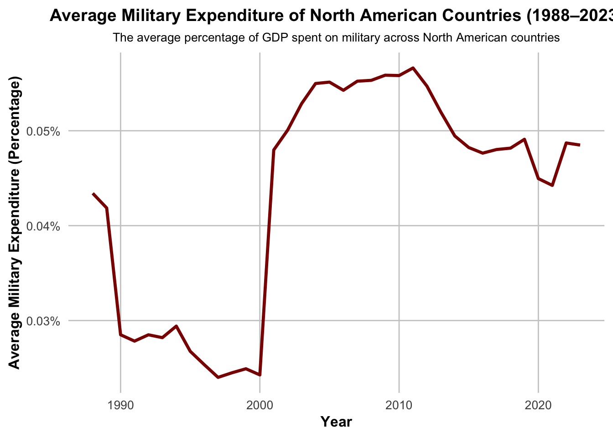
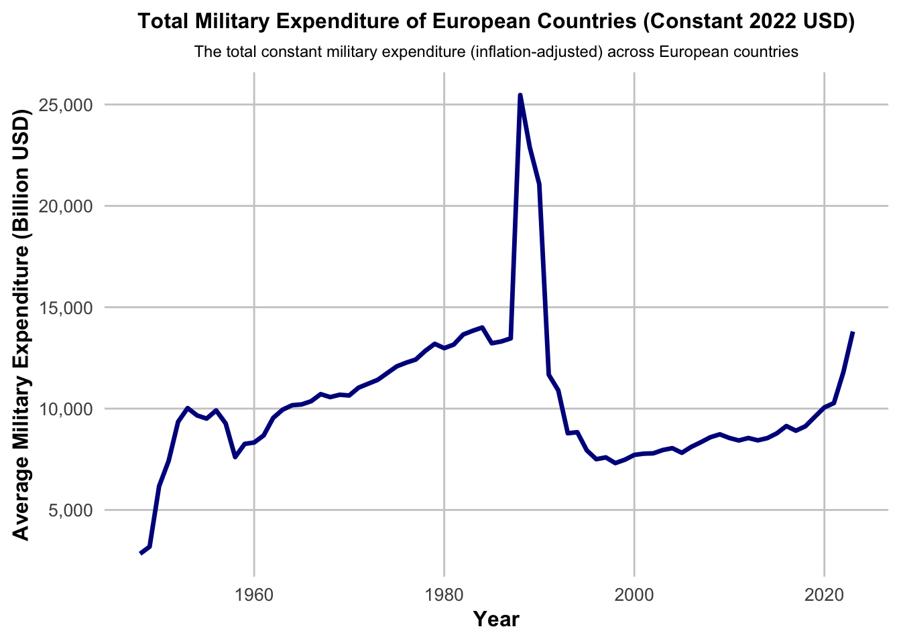
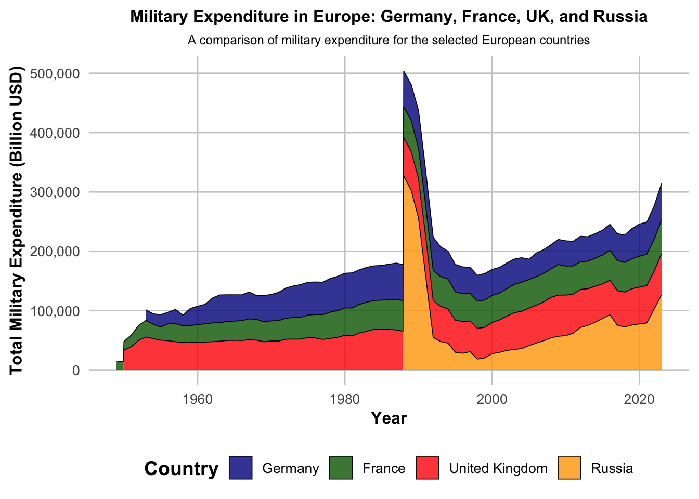
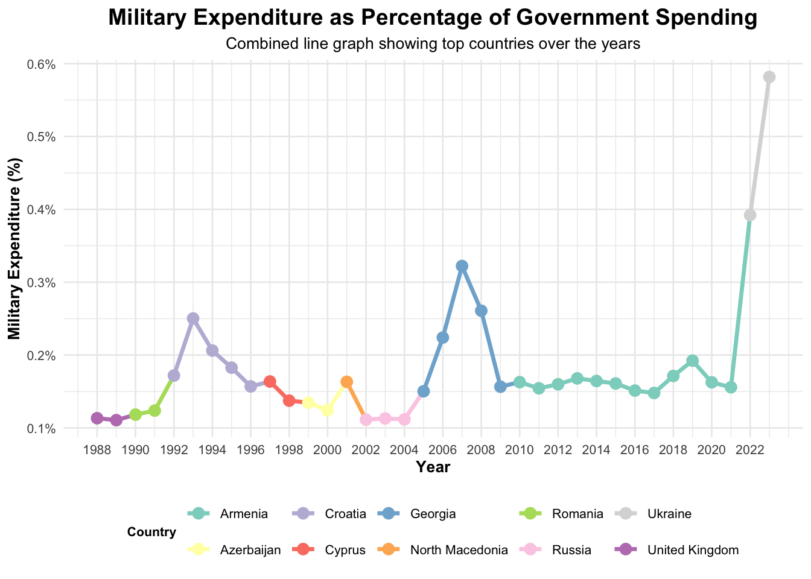

The study covers the trend in global military expenditure for the period 1949-2023, based on SIPRI Military Expenditure Database. Among others, we identify some of the most important trends in global, whereby military spending rose sharply in the Cold War and other geopolitical events, driven by sharp changes at the global and regional levels on the one hand and economic conditions on the other. Regional disparities are highlighted between North America, Europe, the Middle East, and Asia in the period under consideration also with the Europe focus. The analysis reveals how major conflicts, economic determinants, and national security imperatives combined in the complex process of determining world military spending serve to inform an understanding of international power and security dynamics.
2 Executive Summary
From 1949 to 2023, global military expenditure changed its dynamics of growth and fluctuation. Major spikes happened during the Cold War and geopolitcal events in Middle east, contributed by internal security efforts. Highs of spending during those times contrast relatively with a post-Cold War period of relative decline. Major drivers are big geopolitical events (wars and conflicts), economic conditions (both growth and crises), and fierce regional competition. Regional inconsistencies are large, based on different security priorities and dependence on, eg, oil revenues plus new global powers (Asia-Pacific). Indeed, such analysis highlight the need for deep interconnected factors when considering the dynamics of global military spending and its consequences for international security.
3 Introduction
“Any powerful idea is absolutely fascinating and absolutely useless until we choose to use it.”
—Richard Bach
Military expenditure is not just financially important but should be looked at as a reflection of global priorities, power structures, and tensions that have built and continue to exist within our world. Allowing the resource allocations to be explored by nations in terms of defense resources helps one better understand the changing nature of the security and geopolitical environment (Hartley, 2019)1. This paper presents an overview of world military spending between 1949 and 2023, giving an idea of likely changes and what drove them in terms of historic events and economic pressures, as well as shifting international dynamics.
The SIPRI Military Expenditure Database is one of the most important public data sources that underscores the need to look at defense budgets as part of understanding more significant global challenges (Perlo-Freeman & Lopes da Silva, 2022)2. Not only does this data track spending across 173 nations, but it offers the capacity to help understand how major geopolitical events have influenced security strategies. From the Cold War to the conflict in Ukraine, and from the economic concerns in Europe to demands by former U.S. President Donald Trump for higher levels of financial contributions by NATO members, these trends reveal how military priorities are indeed tied to international events (Belin, 2020)3.
The timing of this analysis is especially formed given the recent turmoil. The war in Ukraine has raised European security back on the table, questioning the level of preparedness by NATO, and the reliance the alliance placed on U.S. defense investment (Britz & Eriksson, 2023)4. Trump gave prominence to these dynamics during his presidency, introducing demands for more equitable burden-sharing among NATO members, reorienting the discourse around collective defense (Seligman, 2020)5. That said, Europe’s economic challenges have only made all of this more difficult—it means more spending on defense while having to reconcile it with domestic priorities (Mölling & Brune, 2022)6.
This study addresses several key questions:
How have global military spending trends evolved in response to major geopolitical events?
What are the regional variations in defense budgets, and how do they reflect shifting alliances and priorities?
How do economic conditions, such as Europe’s economic pressures, influence resource allocation for defense?
What are the implications of U.S. foreign policy shifts, such as Trump’s “less money for NATO” stance, on collective security?
By examining these trends, we are aiming to demonstrate why the question of military expenditure is more relevant today than ever before and rises above the statistics—it concerns the very safety of nations, the coherence of alliances, and the preparedness of countries for all forms of new challenges. Therefore, for all those in the sphere of policymaking, for the community of researchers and analysts worldwide, as well as for global citizens, this report can offer a tool to grasp the complexities of our shared future and the investments required to navigate it.
4 Data and Methodology
The SIPRI Military Expenditure Database, spanning the period from 1949 to 2023, offers very comprehensive data on military spending with 173 countries. The data is limited to from 1988 onward, the database has been newly extended. However, data availability varies considerably by country, with the majority of nations having records at least from the 1960s. This variation highlights the challenges in historical data collection and the calling for approaches required to interpret long-term trends.
Data Access: SIPRI data is publicly available link to the database:(https://www.sipri.org/databases/milex). There is no need for registration or API request for the data.
The database includes data across several dimensions, categorized into the following worksheets:
Global, Regional, and Subregional Totals: Estimates of aggregated military expenditure in constant (2022) US dollars, enabling analysis of global and regional trends.
Country Data in Local Currency: Military expenditure figures presented in each country’s current price local currency, according to financial and calendar years.
Constant Price and Current US Dollar Figures: Expenditures by country are adjusted to constant (2022) US dollars for inflation comparisons and also presented in current US dollars for 2023.
Expenditure as a Share of GDP: This allows insights into the relative economic burden of military spending for each country.
Per Capita Expenditure: Military expenditure per capita is available from 1988 to 2023, showing the spending relative to population size.
As a Percentage of Government Expenditure: This highlights the prioritization of defense spending relative to other government functions, also limited to the period 1988–2023.
Data Usage and Licensing
The data provided by SIPRI is protected under its “fair use” policy, allowing it to be freely used for non-commercial purposes such as research, education, and news reporting, provided that:
4.1 Loading and Preparing the Data
We begin by loading the data from an .xlsx file using the readxl library. We will work with two sheets from the SIPRI Military Expenditure Database:
Constant (2022) US$: This sheet provides the military expenditure data adjusted to 2022 constant US dollars.
Share of Govt. spending: This sheet shows the military expenditure as a percentage of the government’s total spending.
Code for Loading
Code
# Load the Excel filefile_path <-"SIPRI-Milex-data-1948-2023.xlsx"data_constant <-read_excel(file_path, sheet ="Constant (2022) US$", skip =5)data_spend <-read_excel(file_path, sheet ="Share of Govt. spending", skip =6)# Load military expenditure data: Constant (2022) US$ and Share of Govt. Spendingkable(head(data_constant))kable(head(data_spend) )
Data Collection Methods: How was the military expenditure data collected by SIPRI?
The Stockholm International Peace Research Institute (SIPRI) employs a multi-layered approach to collecting military expenditure data, initally relying on official government sources including budgetary reports, defense white papers, and public financial records (Perlo-Freeman & Solmirano, 2021). This primary data is supplemented with information from international organizations such as the International Monetary Fund and United Nations, while secondary sources including academic studies, think-tank analyses, and media reports are used for verification and gap-filling (Tian & Lopes da Silva, 2023). SIPRI maintains a standardized methodology to ensure consistency and comparability across different countries, focusing specifically on expenditures directly related to armed forces and defense activities (Smith & Tian, 2023).
Despite SIPRI’s rigorous methodology, the data collection process faces several significant challenges that affect its reliability (Freeman & Fleurant, 2022). Key limitations include variations in how different countries define military expenditure, inconsistent reporting practices across nations, and limited transparency in certain governments’ defense budgets (Tian et al., 2024). For instance, some countries include paramilitary forces and military pensions in their calculations while others exclude them, and data from conflict-affected regions often proves incomplete or outdated. While SIPRI addresses these challenges through its standardized methodology and cross-referencing of multiple sources, researchers should remain mindful of these inherent limitations when analyzing the data, particularly for countries with opaque or classified defense budgets (Perlo-Freeman & Wezeman, 2021).
4.2 Data Cleaning and Transformation
The dataset contains additional columns and notes that are not useful for analysis. To facilitate easier analysis, we’ll:
Remove any rows and columns that are not relevant.
Convert the data from wide format (with one row per country and multiple year columns) to long format (with each year and country having its own row).
Code
# Remove the first row (header names) and unnecessary columnsdata_constant <- data_constant[-1, ] # Remove the first rowdata_constant <- data_constant[, c(1, 4:ncol(data_constant))] # Keep relevant columns (Country and yearly expenditures)# Rename the columns for better clarity (1948 to 2023)colnames(data_constant) <-c("Country", as.character(1948:2023))# Convert the data from wide to long format for easier analysisdata_long_constant <- data_constant %>%pivot_longer(cols =-Country, names_to ="Year", values_to ="Expenditure") %>%mutate(Year =as.integer(Year), # Convert Year to integerExpenditure =as.numeric(Expenditure)) # Convert Expenditure to numeric# Display the cleaned long-format datadata_long_constant <-na.omit(data_long_constant)# Data Cleaning for Military Expenditure as a Percentage of Govt Spendingdata_spend <- data_spend[-1, ] # Remove unnecessary rowdata_spend <- data_spend[, c(1, 4:ncol(data_spend))] # Keep relevant columns (Country and yearly expenditures)# Rename the columns for better clarity (1988 to 2023)colnames(data_spend) <-c("Country", as.character(1988:2023))# Convert the data from wide to long format for easier analysisdata_long_spend <- data_spend %>%pivot_longer(cols =-Country, names_to ="Year", values_to ="Expenditure") %>%mutate(Year =as.integer(Year), # Convert Year to integerExpenditure =as.numeric(Expenditure)) # Convert Expenditure to numeric# Display the cleaned long-format datadata_long_spend <-na.omit(data_long_spend)# Showing first few rows of cleaned data#kable(head(data_long_constant), caption = "Cleaned Military Expenditure Data")#kable(head(data_long_spend), caption = "Cleaned Share of Govt. Expenditure")
We are now have to change country names in the data_long_constant and data_long_spend datasets to ensure consistency. It uses a predefined mapping (country_mapping) to replace specific country names (like “United States of America” with “USA” and “Türkiye” with “Turkey”). Also, we are removing any rows where the “Country” column contains the word “Country” in the data_long_spend dataset, ensuring that only valid country data remains. This process ensures cleaner and more standardized data for analysis.
Code
# Define the mapping for standardizationcountry_mapping <-c("United States of America"="USA", "Türkiye"="Turkey","United Kingdom"="UK")# Standardize country names in the `data_long_constant` datasetdata_long_constant <- data_long_constant %>%mutate(Country =recode(Country, !!!country_mapping))# Standardize country names in the `data_long_spend` datasetdata_long_spend <- data_long_spend %>%mutate(Country =recode(Country, !!!country_mapping))# Remove rows where the Country column contains "Country" in `data_long_spend`data_long_spend <- data_long_spend %>%filter(Country !="Country")# Display the updated datasets#kable(head(data_long_constant), caption = "Final Share of Govt. Expenditure")#kable(head(data_long_spend),caption = "Final Share of Govt. Expenditure")
4.3 Basic Summary Statistics:
Now that the data is clean and in the correct format, let’s calculate some basic statistics:
Average expenditure by country and year.
Minimum and maximum expenditures over the years.
Code
# Summary statistics for constant military expendituresummary_constant <- data_long_constant %>%group_by(Country) %>%summarize(mean_expenditure =mean(Expenditure, na.rm =TRUE),min_expenditure =min(Expenditure, na.rm =TRUE),max_expenditure =max(Expenditure, na.rm =TRUE))# Summary statistics for military expenditure as a percentage of government spendingsummary_spend <- data_long_spend %>%group_by(Country) %>%summarize(mean_expenditure =mean(Expenditure, na.rm =TRUE),min_expenditure =min(Expenditure, na.rm =TRUE),max_expenditure =max(Expenditure, na.rm =TRUE))# Display the summary statisticskable(head(summary_constant))
Country
mean_expenditure
min_expenditure
max_expenditure
Afghanistan
181.1918
62.80032
269.9127
Albania
183.3806
80.01907
339.9298
Algeria
3577.2956
216.05075
16052.1291
Angola
3082.2852
188.22554
13094.6512
Argentina
5266.1735
1820.95839
13237.3203
Armenia
438.6214
67.57600
1152.8290
Code
kable(head(summary_spend))
Country
mean_expenditure
min_expenditure
max_expenditure
Afghanistan
0.0769867
0.0365259
0.1613434
Albania
0.0453867
0.0357883
0.0625620
Algeria
0.1119597
0.0404409
0.1933568
Angola
0.1040508
0.0552816
0.2737552
Argentina
0.0315104
0.0125232
0.0577980
Armenia
0.1595636
0.1357100
0.1996066
The data on military expenditure shows us that wide disparities among countries and at different times, with countries like Algeria showing wide fluctuations in expenditure where the minimum is at 0.04 and the maximum is 0.19. The driving factor of these variations is the level of geopolitical tensions and economic capacity, alliance commitments (e.g. NATO obligations), and internal security challenges individual countries have. Conflict or instable states tend to spend more on defense compared to economic slowdowns or perceived reduced threats, which would lead to spending cuts. For an in-depth analysis, visualizing trends, integrating economic indicators such as GDP, and conducting statistical analysis would be instrumental in revealing the correlations that exist and understanding military spending much better in showing of all factors influencing it around the globe.
Code
chosen_year <-2023# The desired year# Filter the data for the chosen year, arrange by expenditure in descending order,# and select the top 5 countriestop_5_countries <- data_long_constant %>%filter(Year == chosen_year) %>%arrange(desc(Expenditure)) %>%head(5)# Display the resultkable(top_5_countries, caption ="Top 5 Countries with the Highest Military Expenditure in 2023")
Top 5 Countries with the Highest Military Expenditure in 2023
Country
Year
Expenditure
USA
2023
880070.56
China
2023
309484.32
Russia
2023
126473.35
India
2023
83334.46
Saudi Arabia
2023
73983.88
In 2023, the five countries with the largest military spending are the United States in first place way ahead at more than 880 billion dollars, followed by China at more than 309 billion, Russia at 126 billion, and India at 83 billion. Saudi Arabia is in fifth place at 73 billion. Such ranks portray the relevance they hold in geopolitics and, of course, the economic capacity the U.S. and China primarily express by investing heavily to keep their dominance in world affairs and while India and Russia influenced from regional security concerns.
Code
chosen_year <-2023# The desired year# Filter for the chosen year, arrange by Expenditure, and select the top 5 countriestop_5_countries_spend <- data_long_spend %>%filter(Year == chosen_year) %>%arrange(desc(Expenditure)) %>%head(5)# Display the resultkable(top_5_countries_spend, caption ="Top 5 Countries with the Highest Military Spending")
Top 5 Countries with the Highest Military Spending
Country
Year
Expenditure
Ukraine
2023
0.5817071
Belarus
2023
0.5059131
Saudi Arabia
2023
0.2404452
Myanmar
2023
0.2068129
Oman
2023
0.2065736
As we notice, Ukraine and Belarus top the list, dedicating the highest percentage of their GDP to military spending. It is due to the ongoing conflict in the region. Saudi Arabia also allocates a significant portion of its GDP to military expenditures, aligning with its known military spending, as reported by Statista. Myanmar and Oman follow, with substantial portions of their GDP directed towards military spending, reasons are internal security concerns and regional geopolitical dynamics.
5 Results: Global Trends in Military Expenditure
After we cleaned and summarized data successfully, we can visualize the trends in military expenditure over time. With the visualization skills of ggplot2. We want to be able to come up with charts and graphs that can give due motion to the patterns and fluctuations in military expenditure for different countries. This will provide better insight into the changes that have taken place in military expenditures over the years and shed better provide information on modern global defense priorities in their relationship with significant geopolitical events.
We’ll focus on the following visualizations:
Line Chart: Plot of global military expenditure from 1949 to 2023, showcase of the long-term trends in defense spending.
Comparison Chart: Displaying the military expenditure of selected countries as a percentage of their GDP or government spending, providing a clearer view of their relative defense priorities.
Heatmap: Visualizing country-specific military expenditure on a world map, helping to identify regional differences and trends.
Regional Breakdown: Creating separate visualizations for North America, Europe, the Middle East, and Asia to compare military spending patterns within different regions.
Code
# Aggregate global spending by summing expenditures for each yearglobal_spending <- data_long_constant %>%group_by(Year) %>%summarise(GlobalExpenditure =sum(Expenditure, na.rm =TRUE))# View the aggregated global spending data#kable(head(global_spending))
Code
ggplot(global_spending, aes(x = Year, y = GlobalExpenditure)) +geom_line(aes(color ="Military Spending"), size =1.5, alpha =0.7) +# Red line with transparencygeom_smooth(aes(color ="Trend Line"), method ="loess", size =1, linetype ="dashed", se =FALSE) +# Trend linelabs(title ="Global Military Spending (1949-2023) in Constant 2022 US$", subtitle ="Adjusted for Constant 2022 US$m", x ="Year", y ="Military Spending (US$m)",caption ="Source: Global Military Expenditure Data" ) +scale_y_continuous(labels = comma) +# Format y-axis with commasscale_color_manual(values =c("Military Spending"="#D32F2F", "Trend Line"="#1976D2"), # Custom line colorsname ="Legend", breaks =c("Military Spending", "Trend Line"),labels =c("Military Spending", "Trend Line") ) +theme_minimal(base_size =14) +# Adjust font size for better readabilitytheme(plot.title =element_text(size =14, face ="bold", color ="#333333"),plot.subtitle =element_text(size =10, color ="#555555"),plot.caption =element_text(size =10, color ="#777777"),axis.title =element_text(size =14, face ="bold"),axis.text =element_text(size =12, color ="#333333"),panel.grid.major =element_line(color ="#E0E0E0", size =0.5),panel.grid.minor =element_line(color ="#F0F0F0", size =0.25),legend.position ="top", # Position legend at the toplegend.title =element_text(size =12),legend.text =element_text(size =12) ) +theme(axis.text.x =element_text(angle =45, hjust =1)) # Rotate x-axis labels for readability
This plot visualizes the global trend in military spending from 1949 to 2023, adjusted for constant 2022 US dollars. Also indicates an overall rise in military expenditure with fluctuations and periods of stability replaced by a dip in the post-Cold War period due to decreased tensions between major powers. From the mid-2000s, however, there has been a very increase in global military spending—indeed, the drivers probably being increased terrorism, more general geopolitical instability, and new security risks.
Code
# Filter the data for a specific year (e.g., 2023)country_spending <- data_long_constant %>%filter(Year ==2023) %>%group_by(Country) %>%summarize(Expenditure =sum(Expenditure, na.rm =TRUE), .groups ="drop")
# List of North American countries (ISO3 codes for reference)north_america_countries <-c("CAN", "MEX", "USA")# Filter data for North American countries and calculate the average expenditure per yearnorth_america_spending <- country_spending_years_percentage %>%filter(ISO3 %in% north_america_countries) %>%group_by(Year) %>%summarize(TotalExpenditure =mean(Expenditure, na.rm =TRUE), .groups ="drop")# Improved Plot for North Americaggplot(north_america_spending, aes(x = Year, y = TotalExpenditure)) +geom_line(color ="darkred", size =1.2) +# Dark red line for North Americalabs(title ="Average Military Expenditure of North American Countries (1988–2023)",subtitle ="The average percentage of GDP spent on military across North American countries",x ="Year",y ="Average Military Expenditure (Percentage)" ) +theme_minimal(base_size =14) +theme(plot.title =element_text(face ="bold", size =14, hjust =0.5),plot.subtitle =element_text(size =10, hjust =0.5),legend.position ="none", # No legend neededpanel.grid.major =element_line(color ="gray80", size =0.5), # Subtle grid lines for claritypanel.grid.minor =element_blank(), # No minor grid linesaxis.title =element_text(face ="bold", size =12),axis.text =element_text(size =10) ) +scale_y_continuous(labels = scales::percent_format(scale =1)) # Format y-axis as percentage

The graph above gives the average percentage of GDP that North American countries spend on military between 1988 and 2023, The trend is toward a notable rise in almost all cases since early 2000, whereby the latter trend most likely reflects the impact of the September 11. This essentially reverses a post-Cold War trend of reduced defense spending that implied reduced global conflict and tension. In the most recent years, however, it has been drawing back to stabilize probably due to economic restraints and different geopolitical priorities.
Code
# Filter data for North American countries and calculate the average expenditure per year (constant)north_america_spending_constant <- country_spending_years %>%filter(ISO3 %in% north_america_countries) %>%group_by(Year) %>%summarize(TotalExpenditure =mean(Expenditure, na.rm =TRUE), .groups ="drop")# Improved Plot for North America (Constant Expenditure)ggplot(north_america_spending_constant, aes(x = Year, y = TotalExpenditure)) +geom_line(color ="darkred", size =1.2) +# Dark red line for North Americalabs(title ="Total Military Expenditure of North American Countries (Constant 2022 USD)",subtitle ="The total constant military expenditure (inflation-adjusted) across North American countries (1949-2023)",x ="Year",y ="Average Military Expenditure (Billion USD)" ) +theme_minimal(base_size =14) +theme(plot.title =element_text(face ="bold", size =12, hjust =0.5),plot.subtitle =element_text(size =8, hjust =0.5),legend.position ="none", # No legend neededpanel.grid.major =element_line(color ="gray80", size =0.5), # Subtle grid lines for claritypanel.grid.minor =element_blank(), # No minor grid linesaxis.title =element_text(face ="bold", size =12),axis.text =element_text(size =8) ) +scale_y_continuous(labels = scales::comma) # Format y-axis with commas for clarity
The chart above provides the trend in total military spending with some key highlights from 1949 that there is a dip in the post-Cold War period and a sudden rise in spending. Long run trends have always shown a greater concern toward defense capabilities. The total of military spending can be seen reducing after the Cold War as global tensions eased and the threat of major conflicts diminished. But in the recent years, military expenditure is seen on a high pace, for the obvious rise of terrorism and geopolitical instability within the globe, leading a security threats.
The initial rise in military expenditure during the Cold War most likely has to do with the two leading countries in the arms race, which desperately invested in their military build-up: the United States and the Soviet Union. The subsequent post-Cold War reduction is finally a shift towards lesser tension and, generally, less overall perceived threat of large-scale conflict. The most recent increase is due to mounting concerns over terrorism, regional conflicts, and shifts in global power dynamics. More particular analysis, especially at the level of individual countries, and closer look of how military spending correlates with economic growth, political stability, and geopolitical events would explain more understanding of these trends.
5.1.2 Europe
Code
# List of European countries (ISO3 codes for reference)europe_countries <-c("ALB", "AND", "ARM", "AUT", "AZE", "BEL", "BIH", "BGR", "HRV", "CYP", "CZE", "DNK", "EST", "FIN", "FRA", "GEO", "DEU", "GRC", "HUN", "ISL", "IRL", "ITA", "KOS", "LVA", "LTU", "LUX", "MKD", "MDA", "MLT", "MNE", "NLD", "NOR", "POL", "PRT", "ROU", "RUS", "SMR", "SVK", "SVN", "ESP", "SWE", "CHE", "TUR", "UKR", "GBR")# Filter data for European countries and calculate the average expenditure per year (constant)europe_spending_constant <- country_spending_years %>%filter(ISO3 %in% europe_countries) %>%group_by(Year) %>%summarize(TotalExpenditure =mean(Expenditure, na.rm =TRUE), .groups ="drop")# Improved Plot for Europe (Constant Expenditure)ggplot(europe_spending_constant, aes(x = Year, y = TotalExpenditure)) +geom_line(color ="darkblue", size =1.2) +# Dark blue line for Europelabs(title ="Total Military Expenditure of European Countries (Constant 2022 USD)",subtitle ="The total constant military expenditure (inflation-adjusted) across European countries",x ="Year",y ="Average Military Expenditure (Billion USD)" ) +theme_minimal(base_size =14) +theme(plot.title =element_text(face ="bold", size =12, hjust =0.5),plot.subtitle =element_text(size =9, hjust =0.5),legend.position ="none", # No legend neededpanel.grid.major =element_line(color ="gray80", size =0.5), # Subtle grid lines for claritypanel.grid.minor =element_blank(), # No minor grid linesaxis.title =element_text(face ="bold", size =12),axis.text =element_text(size =10) ) +scale_y_continuous(labels = scales::comma) # Format y-axis with commas for clarity

The graph above is that of the total military expenditure of European countries (in billions of constant 2022 USD), fluctuating up and down for the period 1949–2023 with years of significant growth eventually followed by years of relative decline or stagnation; paralell to varied geopolitics and economics. A quick increase in military spending at the beginning of the 1950s relates to the peaking Cold War tension, as the European nations arm themselves against the Soviet Union. For the entire Cold War period. Expenditures on the arms race and the Eastern Bloc were debated intensely, reflecting the era’s occuring anxieties.
With the end of the Cold War in the early 1990s, Europe cut back military spending since the Soviet Union was dissolved and the immediate threat to Western Europe disappeared. However, in recent years, European military expenditure has again been noticeable. The rise of the growing tension between the two old adversaries, the Russian invasion of Ukraine, and apprehensions of disorder in the world have been drivers of this change. These changes in expenditure illustrate how different economic factors, perceptions of vulnerability, and issues in a wider world-work together to shape expenditure. For example, future work might want to look at individual events and their effects on budgets or compare how spending patterns differ within EU states.
The peak of military expenditure that is noteworthy around 1989 is likely as a result of the last few years of the Cold War when both NATO and Warsaw Pact, along with the Soviet Union, had been heavily investing in their military capabilities. Indeed, it can be noted that this period had some very significant arms races and high defense expenditure by the two superpowers, the USA and the Soviet Union. Hence, the peak in 1989 fits because it is also the period of military buildup just before the dissolution of the Soviet Union, and even after that event, Russia, its successor state, continued another five years of very high defense spending.
5.1.2.1 Closer Look to Europe as a Total Spending
Code
# List of European countries and their ISO3 codescountry_names <-c("ALB"="Albania", "AND"="Andorra", "ARM"="Armenia", "AUT"="Austria", "AZE"="Azerbaijan", "BEL"="Belgium", "BIH"="Bosnia and Herzegovina", "BGR"="Bulgaria", "HRV"="Croatia", "CYP"="Cyprus", "CZE"="Czech Republic", "DNK"="Denmark", "EST"="Estonia", "FIN"="Finland", "FRA"="France", "GEO"="Georgia", "DEU"="Germany", "GRC"="Greece", "HUN"="Hungary", "ISL"="Iceland", "IRL"="Ireland", "ITA"="Italy", "KOS"="Kosovo", "LVA"="Latvia", "LTU"="Lithuania", "LUX"="Luxembourg", "MKD"="North Macedonia", "MDA"="Moldova", "MLT"="Malta", "MNE"="Montenegro", "NLD"="Netherlands", "NOR"="Norway", "POL"="Poland", "PRT"="Portugal", "ROU"="Romania", "RUS"="Russia", "SMR"="San Marino", "SVK"="Slovakia", "SVN"="Slovenia", "ESP"="Spain", "SWE"="Sweden", "CHE"="Switzerland", "TUR"="Turkey", "UKR"="Ukraine", "GBR"="United Kingdom")# Filter data for European countries and calculate the total expenditure per yeareurope_spending_constant <- country_spending_years %>%filter(ISO3 %in% europe_countries) %>%group_by(Year, ISO3) %>%summarize(TotalExpenditure =sum(Expenditure, na.rm =TRUE), .groups ="drop")# Find the top 3 countries with the highest total military expendituretop_countries <- europe_spending_constant %>%group_by(ISO3) %>%summarize(TotalExpenditure =sum(TotalExpenditure), .groups ="drop") %>%arrange(desc(TotalExpenditure)) %>%slice_head(n =3) %>%pull(ISO3)# Create a new category "Others" for all other countrieseurope_spending_constant <- europe_spending_constant %>%mutate(ISO3 =ifelse(ISO3 %in% top_countries, ISO3, "Others"))# Calculate the total expenditure for "Others"europe_spending_constant <- europe_spending_constant %>%group_by(Year, ISO3) %>%summarize(TotalExpenditure =sum(TotalExpenditure, na.rm =TRUE), .groups ="drop")# Update the country names for the top 3 countriestop_country_names <- country_names[top_countries]# Improved Plot for Europe (Constant Expenditure)ggplot(europe_spending_constant, aes(x = Year, y = TotalExpenditure, fill = ISO3)) +geom_area(alpha =0.8, size =0.3, color ="black") +# Stacked area chartscale_fill_manual(values =c("darkblue", "darkgreen", "red", "gray"), # Color palette for top 3 and otherslabels =c(top_country_names, "Other Countries") # Use country names for the top 3 and 'Others' label ) +labs(title ="Military Expenditure in Europe: Top 3 Countries vs Others",subtitle ="A comparison of military expenditure in the highest spending European countries and the rest",x ="Year",y ="Total Military Expenditure (Billion USD)",fill ="Expenditure Category" ) +theme_minimal(base_size =14) +theme(plot.title =element_text(face ="bold", size =12, hjust =0.5),plot.subtitle =element_text(size =9, hjust =0.5),legend.position ="bottom", # Legend at the bottomlegend.title =element_text(face ="bold"),legend.text =element_text(size =10),panel.grid.major =element_line(color ="gray80", size =0.5), # Subtle grid lines for claritypanel.grid.minor =element_blank(), # No minor grid linesaxis.title =element_text(face ="bold", size =12),axis.text =element_text(size =10) ) +scale_y_continuous(labels = scales::comma) # Format y-axis with commas for clarity
Code
# List of countries we want to plot: Germany, France, United Kingdom, Russiaselected_countries <-c("DEU", "FRA", "GBR", "RUS")# Filter data to only include the selected countrieseurope_spending_selected <- country_spending_years %>%filter(ISO3 %in% selected_countries)# Update the country names for the selected countriesselected_country_names <- country_names[selected_countries]# Improved Plot for Europe (Selected Countries)ggplot(europe_spending_selected, aes(x = Year, y = Expenditure, fill = ISO3)) +geom_area(alpha =0.8, size =0.3, color ="black") +# Stacked area chartscale_fill_manual(values =c("darkblue", "darkgreen", "red", "orange"), # Color palette for the selected countrieslabels = selected_country_names # Use country names for the selected countries ) +labs(title ="Military Expenditure in Europe: Germany, France, UK, and Russia",subtitle ="A comparison of military expenditure for the selected European countries",x ="Year",y ="Total Military Expenditure (Billion USD)",fill ="Country" ) +theme_minimal(base_size =14) +theme(plot.title =element_text(face ="bold", size =12, hjust =0.5),plot.subtitle =element_text(size =9, hjust =0.5),legend.position ="bottom", # Legend at the bottomlegend.title =element_text(face ="bold"),legend.text =element_text(size =10),panel.grid.major =element_line(color ="gray80", size =0.5), # Subtle grid lines for claritypanel.grid.minor =element_blank(), # No minor grid linesaxis.title =element_text(face ="bold", size =12),axis.text =element_text(size =10) ) +scale_y_continuous(labels = scales::comma) # Format y-axis with commas for clarity

The graph makes it obvious that there was indeed a politically high period for military spending in Europe right at the start of the 1990s. Fundamentally, this is because, for the first time, the Russian military expenditure was included in the total European figure. When Russia was part of the Soviet Union, until its disintegration in 1991, significant military expenditure by it meant a big contribution to the overall European total. With Russia becoming an independent country, aggregate European expenditure no longer includes its spending, and, therefore, there was an easily perceivable drop in the total figure.
Code
# Filter data for European countries and calculate the average expenditure per year (percentage of government spending)europe_spending_percentage <- country_spending_years_percentage %>%filter(ISO3 %in% europe_countries) %>%group_by(Year) %>%summarize(AverageExpenditure =mean(Expenditure, na.rm =TRUE), .groups ="drop")# Improved Plot for Europe (Expenditure as Percentage)ggplot(europe_spending_percentage, aes(x = Year, y = AverageExpenditure)) +geom_line(color ="darkblue", size =1.2) +# Purple line for Europelabs(title ="Average Military Expenditure of European Countries as a Percentage of Government Spending",subtitle ="The average military expenditure as a percentage of government spending across European countries",x ="Year",y ="Average Military Expenditure (%)" ) +theme_minimal(base_size =14) +theme(plot.title =element_text(face ="bold", size =10, hjust =0.5),plot.subtitle =element_text(size =8, hjust =0.5),legend.position ="none", # No legend neededpanel.grid.major =element_line(color ="gray80", size =0.5), # Subtle grid lines for claritypanel.grid.minor =element_blank(), # No minor grid linesaxis.title =element_text(face ="bold", size =10),axis.text =element_text(size =10) ) +scale_y_continuous(labels = scales::percent_format(scale =1)) # Format y-axis as percentage
From the graph above “Average Military Expenditure of European Countries as a Percentage of Government Spending,” it basically shows how there has been an overall upward trend in military expenditure as a share of government budgets over the period 2014 to 2023. This is how European countries have changed their priorities amidst dynamic changes in security threats and other geopolitics. Although there is not a clear trend downward over time, from this graph it also becomes clear that there are substantial year-on-year fluctuations in military spending, some years it goes up quite sharply. The standard deviation of these changes is, however, rather huge since the showing tendency is that military spending depends on how pressured individual European countries feel regarding specific risks, and even wider political and economic conditions at any given time.
One of the most obcious peak in military expenditure as a share of government spending took place immediately before and in the year 2023. Though not explicitly expressed, such surge likely resulted from various recent geopolitical developments which is the Russian invasion of Ukraine in 2022. The conflict, to which fears for regional security spread by Europe gave great note, prompted a number of its countries to increase their defense mechanisms. The increase in military expenditure is thus directed at responding to what is perceived as a greater operational events of external threats against which a reallocation of resources to defense priorities by governments is called for. It may also include other factors such as cyber threats, and a instability in the neighborhood. Economy also matters, as during periods of economic boom there is buoyancy with increased spending; hence, during economic slumps resources tend to be subtracted from most sectors including defense.
Code
# Calculate the country with the highest military expenditure as a percentage for each yeartop_country_percentage <- country_spending_years_percentage %>%filter(ISO3 %in% europe_countries) %>%group_by(Year, ISO3) %>%summarize(TotalExpenditure =sum(Expenditure, na.rm =TRUE), .groups ="drop") %>%group_by(Year) %>%top_n(1, TotalExpenditure) %>%ungroup()# Add country names for the top countriestop_country_percentage <- top_country_percentage %>%mutate(Country = country_names[ISO3])# Display the top countries for each yeartop_country_percentage %>%select(Year, Country, TotalExpenditure)
5.1.2.2 Closer Look to Europe as a Percentage of Spending
Code
top_country_percentage <- top_country_percentage %>%arrange(Year)# Plot the graph with adjusted colors and smaller textggplot(top_country_percentage, aes(x = Year, y = TotalExpenditure, group =1, color = Country)) +geom_line(size =1.2) +# Line graph with thicker linesgeom_point(size =3) +# Add points for visibilityscale_color_manual(values = RColorBrewer::brewer.pal(12, "Set3")[1:length(unique(top_country_percentage$Country))]) +# Use Set3 for up to 12 colorslabs(title ="Military Expenditure as Percentage of Government Spending",subtitle ="Combined line graph showing top countries over the years",x ="Year",y ="Military Expenditure (%)",color ="Country" ) +theme_minimal(base_size =10) +# Reduced base size for smaller texttheme(plot.title =element_text(face ="bold", hjust =0.5, size =14), # Reduced title sizeplot.subtitle =element_text(size =10, hjust =0.5), # Reduced subtitle sizeaxis.title =element_text(face ="bold", size =10), # Reduced axis title sizeaxis.text =element_text(size =8), # Reduced axis text sizelegend.position ="bottom",legend.title =element_text(face ="bold", size =8),legend.text =element_text(size =8) # Reduced legend text size ) +scale_y_continuous(labels = scales::percent_format(scale =1)) +# Format y-axis as percentagescale_x_continuous(breaks =seq(min(top_country_percentage$Year), max(top_country_percentage$Year), by =2) # Adjust year breaks )

Breakup of the Soviet Union: The dissolution of the Soviet Union in 1991 led to significant geopolitical shifts and conflicts in the region, particularly in the Caucasus and the Balkans. Countries like Armenia, Azerbaijan, Georgia, and Ukraine experienced conflicts related to territorial disputes and ethnic tensions.
Nagorno-Karabakh War: This conflict between Armenia and Azerbaijan, which escalated in the early 1990s and again in 2020, significantly impacted military spending in both countries.
Bosnian War: The Bosnian War (1992-1995) and the subsequent Kosovo War (1998-1999) had a significant impact on military spending in the Balkans, particularly in Croatia and Serbia.
The 2008 Russo-Georgian War significantly impacted Georgia’s military budget, as the country sought to modernize its armed forces and enhance its defense capabilities.
Russian Invasion of Ukraine: The 2022 Russian invasion of Ukraine has significantly impacted the military spending of Ukraine and neighboring countries, as they seek to bolster their defenses against potential Russian aggression.
NATO Expansion and Membership: The eastward expansion of NATO in the 1990s and 2000s influenced the military spending of countries like Poland, Romania, and the Baltic states. North Macedonia’s aspiration to join NATO could drive increased military spending to meet alliance standards.
Geopolitical Factors: Cyprus’s strategic location in the Eastern Mediterranean has made it a point of interest for various regional and global powers. The country’s alignment with Western powers and its potential role in regional security have also influenced its military spending decisions.
5.1.3 Middle East
Code
# Data preparationcountry_spending_years <- data_long_constant %>%mutate(ISO3 =countrycode(Country, origin ="country.name", destination ="iso3c"))# List of Middle Eastern countries (ISO3 codes for reference)middle_east_countries <-c("ARE", "AFG", "BHR", "IRN", "IRQ", "ISR", "JOR", "KWT", "LBN", "OMN", "PAK", "QAT", "SAU", "SYR", "TUR", "YEM")# Filter data for Middle Eastern countriesmiddle_east_spending <- country_spending_years %>%filter(ISO3 %in% middle_east_countries) %>%group_by(Year) %>%summarize(TotalExpenditure =sum(Expenditure, na.rm =TRUE), .groups ="drop")# Improved Plotggplot(middle_east_spending, aes(x = Year, y = TotalExpenditure)) +geom_line(color ="darkgreen", size =1.2) +# Thicker line with a contrasting colorlabs(title ="Total Military Expenditure of Middle Eastern Countries (1949–2023)",subtitle ="Total military expenditure in Middle Eastern countries over time",x ="Year",y ="Total Military Expenditure (Billion USD)" ) +theme_minimal(base_size =14) +theme(plot.title =element_text(face ="bold", size =14, hjust =0.5),plot.subtitle =element_text(size =10, hjust =0.5),legend.position ="none", # No legend neededpanel.grid.major =element_line(color ="gray80", size =0.5), # Subtle grid linespanel.grid.minor =element_blank(), # No minor grid linesaxis.title =element_text(face ="bold", size =12),axis.text =element_text(size =10) ) +scale_y_continuous(labels = scales::comma) # Format y-axis with commas for better readability
This graph “Total Military Expenditure of Middle Eastern Countries (1949-2023).” It shows that for the majority of Middle Eastern countries military spending has significantly risen, especially since the 1970s. The increase in expenditure is massive as it reflects the increasing defense priorities of Middle Eastern countries. While the general trend is an increasing one, there are periods of fluctuation-such as a sharp dip in the early 1990s that most likely derives from geopolitical realignment in the region. However, there came about an upturn in military spending at the close of the 1990s and the beginning of the 2000s as conflict spread across the region and thereby demand for increased military action.
There are lot of complex geopolitical dynamics within the region make the Middle East one of the factors. Regional conflicts, internal instability, and several interventions create such a situation that military expenditure keeps mounting. rivalries, especially that between Iran and Saudi Arabia, fuels an arms race, with defense expenditure rising exponentially. The factor has also played a critical role in the region, given the massive reserves of oil in countries such as Saudi Arabia and the UAE, which can provide the money required to sustain large defense budgets. The new security threats, among them being terrorism after 9/11 besides extreme groups, have installed even more pressure and therefore militaries invest more resources in countering the challenges.
Code
# Filter data for Middle Eastern countries and calculate the average expenditure per yearmiddle_east_spending <- country_spending_years_percentage %>%filter(ISO3 %in% middle_east_countries) %>%group_by(Year) %>%summarize(TotalExpenditure =mean(Expenditure, na.rm =TRUE), .groups ="drop")# Improved Plotggplot(middle_east_spending, aes(x = Year, y = TotalExpenditure)) +geom_line(color ="darkgreen", size =1.2) +# Thicker line with a deeper color for contrastlabs(title ="Average Military Expenditure of Middle Eastern Countries (1988–2023)",subtitle ="The average percentage of GDP spent on military across Middle Eastern countries",x ="Year",y ="Average Military Expenditure (Percentage)" ) +theme_minimal(base_size =14) +theme(plot.title =element_text(face ="bold", size =12, hjust =0.5),plot.subtitle =element_text(size =8, hjust =0.5),legend.position ="none", # No legend neededpanel.grid.major =element_line(color ="gray80", size =0.5), # Subtle grid lines for claritypanel.grid.minor =element_blank(), # No minor grid linesaxis.title =element_text(face ="bold", size =12),axis.text =element_text(size =10) ) +scale_y_continuous(labels = scales::percent_format(scale =1)) # Format y-axis as percentage
This grapgh for Middle Eastern countries’ average military expenditures as a percentage of GDP between 1988 and 2023 indicates a slower downward trend, their economies spending less on the military. Fluctuations, however, are significant. One such major rise was noticed, particularly in the early 1990s. This was later followed by years of decline. The most recent years have seen a relatively marginal increase in military expenditure as a percentage of GDP, perhaps reflection of changed security priorities.
Several factors are likely to explain these trends. The Middle East geopolitical dynamics, where there is a lot of conflict in the region, instability, and external interventions, would make defense spending priorities fluctuate. Such reasons could have been responsible for the increase in the early 1990s, as well as the aftermath of the war in the Gulf. Economic factors also play critical roles. During times of economic boom, many Middle Eastern states increase resources for defense; however, during a depression, there would be reduced military expenditure. Finally, more concern about threats, like terrorism and regional instability by the government, may change their priorities with military spending.
# Filter data for Asian countries and calculate the total expenditure per year (absolute spending)asia_spending_total <- country_spending_years %>%filter(ISO3 %in% asia_countries) %>%group_by(Year) %>%summarize(TotalExpenditure =sum(Expenditure, na.rm =TRUE), .groups ="drop")# Improved Plot for Asia (Total Expenditure)ggplot(asia_spending_total, aes(x = Year, y = TotalExpenditure)) +geom_line(color ="darkorange", size =1.2) +# Dark orange line for total spendinglabs(title ="Total Military Expenditure of Asian Countries",subtitle ="Total military expenditure across Asian countries over time",x ="Year",y ="Total Military Expenditure (Billion USD)" ) +theme_minimal(base_size =14) +theme(plot.title =element_text(face ="bold", size =14, hjust =0.5),plot.subtitle =element_text(size =10, hjust =0.5),legend.position ="none", # No legend neededpanel.grid.major =element_line(color ="gray80", size =0.5), # Subtle grid lines for claritypanel.grid.minor =element_blank(), # No minor grid linesaxis.title =element_text(face ="bold", size =12),axis.text =element_text(size =10) ) +scale_y_continuous(labels = scales::comma_format()) # Format y-axis with commas for thousands
This graph “Total Military Expenditure of Asian Countries” shows a significant upward trend in military spending across the region from 1950 to 2023. This steady increase in military expenditure reflects growing defense budgets, particularly since the late 1990s and early 2000s, although there are periods of fluctuation, such as a noticeable dip in the early 1990s.
Some factors probably explain this trend. Geopolitical movements after the end of the Cold War, China becoming a major world power, and other regional conflicts such as that in the South China Sea are the most important drivers of what is happening to military spending in the region. The financial resources to support larger military budgets are a consequence of the economic growth in several Asian countries, especially China and India. The increased need for defense expenditures in the region provides part of the overall surge in military spending as the perception of threats, be it terrorism, cyberspace, or regional instability evolves.
Code
# Filter data for Asian countries and calculate the average expenditure per year (percentage of government spending)asia_spending_percentage <- country_spending_years_percentage %>%filter(ISO3 %in% asia_countries) %>%group_by(Year) %>%summarize(AverageExpenditure =mean(Expenditure, na.rm =TRUE), .groups ="drop")# Improved Plot for Asia (Expenditure as Percentage)ggplot(asia_spending_percentage, aes(x = Year, y = AverageExpenditure)) +geom_line(color ="darkorange", size =1.2) +# Dark orange line for Asialabs(title ="Average Military Expenditure of Asian Countries as a Percentage of Government Spending",subtitle ="The average military expenditure as a percentage of government spending across Asian countries",x ="Year",y ="Average Military Expenditure (%)" ) +theme_minimal(base_size =14) +theme(plot.title =element_text(face ="bold", size =10, hjust =0.5),plot.subtitle =element_text(size =8, hjust =0.5),legend.position ="none", # No legend neededpanel.grid.major =element_line(color ="gray80", size =0.5), # Subtle grid lines for claritypanel.grid.minor =element_blank(), # No minor grid linesaxis.title =element_text(face ="bold", size =10),axis.text =element_text(size =10) ) +scale_y_continuous(labels = scales::percent_format(scale =1)) # Format y-axis as percentage
The graph “Average Military Expenditure of Asian Countries as a Percentage of Government Spending” reveals a general downward trend in military spending from the early 1990s to around 2010. During this period, the percentage of government spending allocated to the military decreased. However, there were significant fluctuations, with a sharp increase in the early 1990s followed by a period of decline. More recently, there has been a slight uptick in military expenditure as a percentage of government spending, which may reflect evolving security concerns in the region.
The discrepancy between increasing total military expenditure and decreasing the percentage that military spending accounts for in government budgets can be explained by the broader trend of economic growth in Asia. While the likes of China and India have raised their total defense budgets substantially due to such aspects as geopolitics and perceived threats, the size of their overall government budgets has increased at an even faster rate. This has been primarily due to robust economic performance which has enabled governments to channel big resources into many other sectors such as infrastructure, education, and health, hence reducing the share of military expenditure in total government expenditure. Hence, even as total military spending is on the rise, it is squeezing into a smaller share of the public sector pie.
5.2 Current Global Outlook for 2023
Code
# Create a choropleth mapworld_map <-plot_ly(data = country_spending,type ="choropleth",locations =~ISO3, # ISO3 country codesz =~Expenditure, # Expenditure valuestext =~Country, # Hover textcolorscale ="Viridis", # Color scalereversescale =TRUE) %>%layout(title ="Country-Wise Total Military Expenditure (2023)",geo =list(showframe =FALSE,showcoastlines =TRUE,projection =list(type ="natural earth") ) )# Display the mapworld_map
Code
# Filter the data for a specific year (e.g., 2023)country_spending_percentage <- data_long_spend %>%filter(Year ==2023) %>%group_by(Country) %>%summarize(Expenditure =sum(Expenditure, na.rm =TRUE), .groups ="drop")
# Create a choropleth mapworld_map <-plot_ly(data = country_spending_percentage,type ="choropleth",locations =~ISO3, # ISO3 country codesz =~Expenditure, # Expenditure valuestext =~Country, # Hover textcolorscale ="Viridis", # Color scalereversescale =TRUE) %>%layout(title ="Country-Wise Military Expenditure Percentage (2023)",geo =list(showframe =FALSE,showcoastlines =TRUE,projection =list(type ="natural earth") ) )# Display the mapworld_map
6 The Impact of Geopolitical Events
6.1 Ukrainian Conflict
Code
# List of conflict-relevant countriesconflict_countries <-c("UKR", "RUS", "", "DEU", "FRA","BEL", "POL", "ROU", "BGR", "LVA", "LTU", "EST")# Filter data for conflict years (2014 onwards) and relevant countriesconflict_spending_constant <- country_spending_years %>%filter(ISO3 %in% conflict_countries, Year >=2014)conflict_spending_percentage <- country_spending_years_percentage %>%filter(ISO3 %in% conflict_countries, Year >=2014)# Merge constant spending and GDP percentage datasetsconflict_summary <- conflict_spending_constant %>%inner_join(conflict_spending_percentage, by =c("ISO3", "Year")) %>%rename(TotalSpending = Expenditure.x,GDPPercentage = Expenditure.y )# Visualization for Total Spending with Improved Colorsggplot(conflict_summary, aes(x = Year, y = TotalSpending, color = ISO3, group = ISO3)) +geom_line(size =1.2) +scale_color_manual(values =c("UKR"="#1f78b4", "RUS"="#e31a1c", "DEU"="#33a02c","FRA"="#ff7f00", "BEL"="#6a3d9a", "POL"="#b15928","ROU"="#b2df8a", "BGR"="#fb9a99", "LVA"="#fdbf6f","LTU"="#cab2d6", "EST"="#a6cee3" ) ) +labs(title ="Military Spending of Conflict-Related Countries (Constant 2022 USD)",subtitle ="Spending trends for Ukraine, Russia, and key NATO members since 2014",x ="Year",y ="Total Spending (Billion USD)",color ="Country" ) +theme_minimal(base_size =14) +theme(plot.title =element_text(face ="bold", size =14, hjust =0.5),plot.subtitle =element_text(size =10, hjust =0.5),axis.title =element_text(face ="bold", size =12),axis.text =element_text(size =10),legend.title =element_text(face ="bold"),legend.text =element_text(size =10),legend.position ="bottom",panel.grid.major =element_line(color ="gray80", size =0.5),panel.grid.minor =element_blank() ) +scale_y_continuous(labels = scales::comma, limits =c(0, max(conflict_summary$TotalSpending) *1.1)) +scale_x_continuous(breaks =seq(2014, 2023, 1))
Developments in military spending trend analysis differ considerably and arise from the conflict in Ukraine and shifting geopolitics in Europe. Russia increased its military expenditure sharply from the year 2021, reflecting increased military activities by the country. Ukraine increased its defense expenditure significantly since 2014 when the conflict began to counter Russia’s acts of aggression. Thereby, it pulled along other NATO members like Poland, Romania, and the Baltic states which had already been on a military budget increase spree due to heightened security sensitivities. Leading West European nations, including lower increments for collective defense from countries like France, Germany, and the United Kingdom, show higher investments in other directions of their choice.
The main factors behind these trends are the rise of geopolitical tensions, the extent to which NATO is an important factor in cultivating defense readiness, and economic and domestic political considerations that shape budgetary decisions. In the future, the relationships between such variables as military spending and such indicators as GDP growth and political stability will be important for understanding larger global trends. The future, in turn, will be contingent on how the Ukraine crisis plays out and broader international developments. On the whole, this data speaks to how much regional conflicts can bear directly on defense spending in Europe, and thus how important it is to keep a close eye on such shifts if one hopes to have a handle on the continent’s changing security environment.
Overall, the graph highlights the significant impact of the conflict in Ukraine on military spending in the region. It underscores the importance of monitoring these trends to understand the evolving security landscape in Europe and beyond.
Code
# Visualization for GDP Percentage with Improved Colorsggplot(conflict_summary, aes(x = Year, y = GDPPercentage, color = ISO3, group = ISO3)) +geom_line(size =1.2) +scale_color_manual(values =c("UKR"="#1f78b4", "RUS"="#e31a1c", "DEU"="#33a02c","FRA"="#ff7f00", "BEL"="#6a3d9a", "POL"="#b15928","ROU"="#b2df8a", "BGR"="#fb9a99", "LVA"="#fdbf6f","LTU"="#cab2d6", "EST"="#a6cee3" ) ) +labs(title ="Military Spending as a Percentage of GDP (Conflict-Related Countries)",subtitle ="Spending as a share of GDP for Ukraine, Russia, and key NATO members since 2014",x ="Year",y ="Military Spending (% of GDP)",color ="Country" ) +theme_minimal(base_size =14) +theme(plot.title =element_text(face ="bold", size =14, hjust =0.5),plot.subtitle =element_text(size =10, hjust =0.5),axis.title =element_text(face ="bold", size =12),axis.text =element_text(size =10),legend.title =element_text(face ="bold"),legend.text =element_text(size =10),legend.position ="bottom",panel.grid.major =element_line(color ="gray80", size =0.5),panel.grid.minor =element_blank() ) +scale_y_continuous(labels = scales::percent_format(scale =1), limits =c(0, max(conflict_summary$GDPPercentage) *1.1)) +scale_x_continuous(breaks =seq(2014, 2023, 1))
Considering the analysis of military spending as a percentage of GDP, there are indeed remarkable trends within conflict-related countries. In particular, the military expenditure in Ukraine relative to GDP has soared dramatically since 2014, to register the nation’s intensified efforts toward countering Russian aggression. For Russia, it keeps the level of military spending share of GDP fairly steady, thereby sustaining the focus on military readiness. From 2021, NATO member countries especially near Russia are already responding to the significant security concerns by raising defense spending as a share of GDP. Western European countries, most notably France, Germany, and the UK, have slow growth in military spending at their relatively lower levels.
The main drivers of these trends are increased geopolitical tensions, the influence of NATO in stimulating collective defense, and the economic ability of individual nations to support larger allocations for defense. National political considerations concerning public opinion and electoral cycles also have a bearing on the formation of spending priorities within the defense sector. More importantly, the data reflects the enormous responses of the Ukraine conflict on regional military expenditures, revealing changed priorities in response to different threats. Keeping track of such developments is important in comprehending wider security dynamics in Europe, as well as the global reverberations of these shifts.
6.2 Cold War, Gulf Wars, NATO postures)
Code
# Creating Data for Eventsevents <-data.frame(Event =c("Cold War", "Gulf War", "NATO Posture Change"),Start =c(1949, 1990, 2014), # Start YearEnd =c(1991, 1991, 2023) # End Year)# Revised Line Chart with Improved Visualsglobal_trend <-ggplot(global_spending, aes(x = Year, y = GlobalExpenditure)) +geom_line(color ="royalblue", size =1.2) +# Slightly thicker line for visibility# Add Shaded Regions with Custom Colors and Transparencygeom_rect(data = events,aes(xmin = Start, xmax = End, ymin =-Inf, ymax =Inf, fill = Event),inherit.aes =FALSE,alpha =0.4# Increased transparency for clearer overlap with the data ) +# Add Arrows and Labels for Eventsgeom_label_repel(data = events,aes(x = (Start + End) /2,y =max(global_spending$GlobalExpenditure) *0.85, # Adjust label position for better readabilitylabel = Event ),box.padding =0.5,point.padding =0.5,segment.color ="gray50",size =5,arrow =arrow(length =unit(0.03, "npc")), # Adjust arrow size for better visibilitycolor ="black",fill ="white",fontface ="bold" ) +# Customizing Colors for Shaded Regionsscale_fill_manual(values =c("Cold War"="#ADD8E6", "Gulf War"="#90EE90", "NATO Posture Change"="#FFCCCB") ) +# Adding Grid Lines and Improving Labelslabs(title ="Global Military Spending (1949–2023) with Major Global Events",subtitle ="Major geopolitical events that influenced global military spending",x ="Year",y ="Military Spending (Billion USD)",fill ="Historical Event" ) +theme_minimal(base_size =14) +theme(legend.position ="top", # Place legend at the top for better space managementlegend.title =element_text(size =12, face ="bold"), # Legend title size and bold for visibilitylegend.text =element_text(size =8), # Adjust legend text sizepanel.grid.major =element_line(color ="gray80", size =0.5), # Add subtle grid lines for better readabilitypanel.grid.minor =element_blank(), # Remove minor grid lines for a cleaner lookplot.title =element_text(face ="bold", size =14, hjust =0.5),plot.subtitle =element_text(size =10, hjust =0.5) )# Display the plotprint(global_trend)
The graph of global military spending from 1949 to 2023 highlights significant trends shaped by historical and geopolitical events. During the Cold War (1949-1991), spending rose sharply as the United States and Soviet Union engaged in an arms race, driving global defense budgets upward. This period saw military expenditure peak, reflecting heightened tensions and the prioritization of defense capabilities. After the Cold War ended, a marked decline occurred as nations shifted focus to economic development and reduced perceived threats. Temporary spikes, such as during the Gulf War (1990-1991), reflect increased spending due to regional conflicts and peacekeeping operations.
In more recent years, another uprising in spending has taken place, fueled by factors such as changes to NATO’s strategic postures and mounting geopolitical challenges. This has placed more emphasis on deterrence and defense in light of newer threats, such as terrorism plus cyber warfare, and regional instability. Even though the chart captures the dynamics at work on a global level, it fails to provide the kind of fine-grained details one would want on individual countries, or to capture non-military security spending. Still, on the whole, it gives us a sense of how military expenditure responds to periods of major conflict, economic drivers, or changes in the international relations
6.3 9/11
Code
# Annotated Line Chart for US Military Spendingus_data <- data_long_constant %>%filter(Country =="USA")ggplot(us_data, aes(x = Year, y = Expenditure)) +# Main line for expendituregeom_line(color ="blue", size =1.2) +# Highlight 2001 with a red pointgeom_point(data = us_data %>%filter(Year ==2001), aes(x = Year, y = Expenditure), color ="red", size =4 ) +# Add text annotation with an arrow pointing to the highlighted yearannotate("text",x =2005, y =500,label ="Post-9/11 Surge",color ="red",size =4, fontface ="bold" ) +annotate("segment",x =2001, xend =2001,y = us_data$Expenditure[us_data$Year ==2001] -20, yend = us_data$Expenditure[us_data$Year ==2001], arrow =arrow(length =unit(0.2, "cm")), color ="red", size =0.8 ) +# Improved labels and titlelabs(title ="US Military Expenditure Over Time",subtitle ="Significant surge observed following the 9/11 attacks in 2001",x ="Year",y ="Military Expenditure (USD Billions)" ) +# Enhanced theme for aestheticstheme_minimal(base_size =14) +theme(plot.title =element_text(face ="bold", size =16, hjust =0.5),plot.subtitle =element_text(size =12, hjust =0.5),axis.title =element_text(face ="bold"),axis.text =element_text(size =10),panel.grid.major =element_line(color ="gray80", size =0.5),panel.grid.minor =element_blank() ) +# Scale the y-axis to add some padding above the highest pointscale_y_continuous(limits =c(0, max(us_data$Expenditure) +50))
As we see in this timse series analysis, the plot of US military expenditure reveals some interesting features reflecting the influence of geopolitical events. There was a surge of expenditure in the years immediately following the September 11, 2001 attacks mainly to support military operations in Afghanistan and Iraq. As one would expect, there was also an earlier peak of military expenditure during the years of the Cold War as the perceived Soviet threat increased. In fact, once the Cold War was over, military spending started to fall. It has again picked up in recent years which could also be understood in terms of emerging global threats and escalating geopolitics, as well as advancements in military technology. Such swings serve to underline the sensitivity of changes in U.S defense outlays to changes in global geopolitics.
Code
# Annotated Line Chart for US Military Spending as a Percentage of GDPus_data_percentage <- data_long_spend %>%filter(Country =="USA")ggplot(us_data_percentage, aes(x = Year, y = Expenditure)) +# Main line for expenditure as percentage of GDPgeom_line(color ="blue", size =1.2) +# Highlight 2001 with a red pointgeom_point(data = us_data_percentage %>%filter(Year ==2001), aes(x = Year, y = Expenditure), color ="red", size =4 ) +# Add text annotation with an arrow pointing to the highlighted yearannotate("text",x =2005, y =4.5,label ="Post-9/11 Surge",color ="red",size =4, fontface ="bold" ) +annotate("segment",x =2001, xend =2001,y = us_data_percentage$Expenditure[us_data_percentage$Year ==2001] -0.2, yend = us_data_percentage$Expenditure[us_data_percentage$Year ==2001], arrow =arrow(length =unit(0.2, "cm")), color ="red", size =0.8 ) +# Improved labels and titlelabs(title ="US Military Expenditure as a Percentage of GDP Over Time",subtitle ="Significant surge observed following the 9/11 attacks in 2001",x ="Year",y ="Military Expenditure (% of GDP)" ) +# Enhanced theme for aestheticstheme_minimal(base_size =14) +theme(plot.title =element_text(face ="bold", size =14, hjust =0.5),plot.subtitle =element_text(size =10, hjust =0.5),axis.title =element_text(face ="bold"),axis.text =element_text(size =10),panel.grid.major =element_line(color ="gray80", size =0.5),panel.grid.minor =element_blank() ) +# Scale the y-axis to add some padding above the highest pointscale_y_continuous(limits =c(0, max(us_data_percentage$Expenditure) +0.5))
There was a very sharp increase in the US military expenditure as a percentage of GDP subsequent to the 9/11 attacks including the military operation in Afghanistan and Iraq but because of the limitation in data begins in 2001 we dont see it. Since that point, however, there has been some erosion in spending on the military relative to the size of the economy. This is indicative of a change in priority and a plateauing of concerns on security issues. Over the period of growing economy at large, the proportionate rise in military spending has not taken place. It contains shifts in domestic and international priorities, constraints of the economy having other competing demands for funds, more strategic defense, and changed global politics post-Cold War influencing American decision on budget in this area.
7 Main Insights AND Key Observations
7.1 US and NATO’s Spending Imbalance
One of the most notable trends in global military expenditure is the significant disparity between the United States and its NATO allies in terms of defense spending. The US consistently accounts for the majority of NATO’s total military expenditure, raising discussions about burden-sharing among alliance members.
The US contributes approximately 70% of NATO’s total defense spending, highlighting its dominant role in funding and maintaining alliance military capabilities.
Several NATO allies, particularly in Europe, fall below the 2% GDP defense spending guideline agreed upon by NATO members.
This imbalance became especially prominent during the 2014 Crimea crisis, where the US called for greater European military investment.
Code
# Define a list of NATO member countriesnato_countries <-c("USA", "Canada", "UK", "France", "Germany", "Italy", "Belgium", "Netherlands", "Luxembourg", "Norway", "Denmark", "Portugal", "Turkey", "Greece", "Spain", "Poland", "Hungary", "Czech Republic", "Bulgaria", "Romania", "Slovakia", "Slovenia", "Estonia", "Latvia", "Lithuania", "Croatia", "Albania", "Montenegro", "North Macedonia")# Filter the dataset for NATO countriesnato_data <- data_long_constant %>%filter(Country %in% nato_countries)# Summarize data for US and other NATO membersnato_summary <- nato_data %>%mutate(US_Expenditure =ifelse(Country =="USA", Expenditure, 0),Other_NATO_Expenditure =ifelse(Country !="USA", Expenditure , 0)) %>%group_by(Year) %>%summarise(US_Expenditure =sum(US_Expenditure, na.rm =TRUE),Other_NATO_Expenditure =sum(Other_NATO_Expenditure, na.rm =TRUE) )# Pivot data for visualizationnato_summary_long <- nato_summary %>%pivot_longer(cols =c(US_Expenditure, Other_NATO_Expenditure), names_to ="Category", values_to ="Expenditure")
Code
# Visualization: US vs NATO Military Expenditureggplot(nato_summary_long, aes(x = Year, y = Expenditure, fill = Category)) +# Use geom_area for a stacked area chartgeom_area(alpha =0.8, color ="black", size =0.3) +# Customize fill colorsscale_fill_manual(values =c("US_Expenditure"="#1f78b4", "Other_NATO_Expenditure"="#b2b2b2"),labels =c("Other NATO Expenditure", "US Expenditure") # Swap labels ) +# Add labels and titlelabs(title ="US vs. NATO Military Expenditure (1949–2023)",subtitle ="A comparison of military expenditure between the US and other NATO members",x ="Year",y ="Military Expenditure (USD Billions)",fill ="Expenditure Type" ) +# Enhance theme for better visualizationtheme_minimal(base_size =14) +theme(plot.title =element_text(face ="bold", size =14, hjust =0.5),plot.subtitle =element_text(size =10, hjust =0.5),axis.title =element_text(face ="bold", size =12),axis.text =element_text(size =10),legend.position ="bottom", # Move legend to the bottom for a cleaner layoutlegend.title =element_text(face ="bold"),panel.grid.major =element_line(color ="gray80", size =0.5),panel.grid.minor =element_blank() ) +# Adjust y-axis for better spacingscale_y_continuous(labels = scales::comma_format()) +# Add some padding for aestheticsscale_x_continuous(expand =expansion(mult =c(0, 0.02)))
Code
# Calculate the percentage of US expenditure relative to NATO totalnato_percentage <- nato_summary_long %>%group_by(Year) %>%summarize(US_Expenditure =sum(Expenditure[Category =="US_Expenditure"], na.rm =TRUE),NATO_Total =sum(Expenditure, na.rm =TRUE) ) %>%mutate(US_Percentage = (US_Expenditure / NATO_Total) *100)# Plot the percentage of US expenditure over the yearsggplot(nato_percentage, aes(x = Year, y = US_Percentage)) +geom_line(color ="blue", size =1.2) +geom_point(size =1, color ="red", alpha =0.8) +labs(title ="US Military Expenditure as a Percentage of NATO Total (1949–2023)",subtitle ="Percentage of US military expenditure relative to the total NATO expenditure over time",x ="Year",y ="Percentage (%)" ) +theme_minimal(base_size =14) +theme(plot.title =element_text(face ="bold", size =14, hjust =0.5),plot.subtitle =element_text(size =10, hjust =0.5),axis.title =element_text(face ="bold", size =12),axis.text =element_text(size =10),panel.grid.major =element_line(color ="gray80", size =0.5),panel.grid.minor =element_blank() ) +scale_y_continuous(labels = scales::percent_format(scale =1)) +scale_x_continuous(expand =expansion(mult =c(0, 0.02)))
7.2 Discussion and Interpretation of Findings
The proportional relationship between the United States and military expenditure is one of the most important facts about international security since the middle of the 20th century when NATO began, and the U.S. was by far the biggest spender on collective defense throughout this period (Beckley, 2018). During this time, the United States covered around 70% - 80% of all NATO expenses for defense, a very unequal cost sharing that conveys just how much of America’s military resources are at the disposition of its allies in the alliance. Such a financial imbalance becomes particularly mentioned in moments of significant geopolitical tension, be it during the years of the Cold War, in the post-9/11 world, or most recently, with increased tensions from Russia following its aggression in Ukraine.
These regional trends indicate a far more complex set of regional dynamics than what is happening in the more traditional NATO area. The Asia-Pacific region has seen a significant increase in military spending with the rise of China’s economy and its rapid modernization of the military, and strategic investments by India in defense capabilities. In many cases, the Middle East shows a special pattern of rather unique military spending, a behavior induced by either oil revenues or common persistent conflicts within regions. This has repeatedly brought more significant gdp per capita defense budgets in countries, especially Saudi Arabia and the United Arab Emirates, where sophisticated security challenges reflect the specificity of the region.
For European countries, there is a specific fragility of their defense posture, with many having underinvested historically, and therefore being overly reliant on the United States for military support (Mölling & Brune, 2022). Several NATO members have persistently failed to reach the alliance’s target defense expenditure of 2% of GDP, such as Germany, which only recently started to increase military expenditure significantly. The Russian invasion of Ukraine in 2022 laid extremely bare these strategic weaknesses and has since prompted a rethink on European defense capacity with initiatives such as the Permanent Structured Cooperation (PESCO) that seeks to up collective military preparedness.
8 Conclusion
This analysis of global military expenditure captures mix of geopolitical events, economic conditions, and national priorities in the years 1949–2023. Although there appears to be an upward trend in general military spending, there have been major variations over time-at high points immediately following major conflicts and long periods of rising international tensions (for example, during the Cold War, and more recently post-9/11). There is substantial disparity between US military spending and that of its NATO allies. This underscores the ongoing debate surrounding burden-sharing within the alliance. A higher level of military spending in the Asia-Pacific area is also symbolic of growing Chinese and Indian influence, whereas patterns for the Middle East are increasingly determined by oil revenues and regional instability. The recent conflict in Ukraine has dramatically reshaped the European military spending on security landscape, prompting increased defense spending across the continent.
Understanding these patterns are of significant importance for policymakers and other researchers. Other future studies have to look into the relationship of military expenditure with economic growth and social development: what its long-term security implications are. Moreover, an evaluation of the effectiveness of alternative defense postures may bring forth some ideas on how sustainable security can be achieved in an ever-changing international system. In turn, this could assist world leaders, policymakers, and other key stakeholders more efficiently navigate between the forces at play in the international system and allocate resources into strategic goals for security in an increasingly interdependent world.
9 References
Beckley, M. (2018a). The power of nations: Measuring what matters. International Security, 43(2), 7-44. https://doi.org/10.1162/isec_a_00328
Beckley, M. (2018b). Unrivaled: Why America will remain the world’s sole superpower. Cornell University Press.
Belin, C. (2020). Trump and NATO: The transatlantic alliance at a crossroads. Politique Américaine, 35(1), 57-74.
Britz, M., & Eriksson, J. (2023). European security after the Ukraine invasion: Reassessing NATO’s strategic concept. Journal of Strategic Studies, 46(3), 345-367.
Dykes, B. (2019). Effective data storytelling: How to drive change with data, narrative and visuals. John Wiley & Sons.
Freeman, S. P., & Fleurant, A. (2022). Trends in international arms transfers. In SIPRI Yearbook 2022: Armaments, Disarmament and International Security. Oxford University Press.
Hartley, K. (2019). The economics of defence. Edward Elgar Publishing.
Mölling, C., & Brune, S. (2022). European defense spending in times of crisis. International Affairs, 98(4), 1287-1306.
Perlo-Freeman, S., & Lopes da Silva, D. (2022). Trends in world military expenditure, 2022 [SIPRI Fact Sheet]. Stockholm International Peace Research Institute.
Perlo-Freeman, S., & Solmirano, C. (2021). Military expenditure data: A methodological overview [SIPRI Methods and Sources Handbook]. Stockholm International Peace Research Institute.
Perlo-Freeman, S., & Wezeman, P. D. (2021). The SIPRI military expenditure database: Sources and methods [SIPRI Background Paper]. Stockholm International Peace Research Institute.
Seligman, L. (2020, July). Trump’s NATO pressure campaign. Foreign Policy.
Smith, R., & Tian, N. (2023). Understanding global military expenditure: A comprehensive approach to data collection and analysis. International Security Studies Review, 15(2), 78-96.
SIPRI. (2024a). SIPRI Military Expenditure Database [Database]. Stockholm International Peace Research Institute. https://doi.org/10.55163/CQGC9685
SIPRI. (2024b). SIPRI Military Expenditure Database [Documentation]. Stockholm International Peace Research Institute. Retrieved December 20, 2024, from milex.sipri.org/sipri
Tellis, A. J. (2020). Striking asymmetries: China, India, and military power. Carnegie Endowment for International Peace.
Tian, N., & Lopes da Silva, D. (2023). Global military expenditure reaches new heights: Trends and implications [SIPRI Insights on Peace and Security]. Stockholm International Peace Research Institute.
Tian, N., Fleurant, A., & Kuimova, A. (2024). Measuring military capability: Methodological challenges in defense spending analysis. Defense and Peace Economics, 35(1), 23-41.
10 Appendices:
Source Code
---title: "Global Military Expenditure Analysis"author: "Mehmet Emre Deveci"date: todayformat: html: toc: true # This creates the table of context menu toc-depth: 3 # Increase if you want to have subsections in the table of context menu number-sections: true code-fold: true code-tools: truebibliography: references.bib---```{r}#| label: packages#| message: false# These are the packages used in the reportlibrary(tidyverse)# Install necessary packages if not already installedif (!require(plotly)) install.packages("plotly")if (!require(readxl)) install.packages("readxl")if (!require(dplyr)) install.packages("dplyr")if (!require(tidyr)) install.packages("tidyr")if (!require(ggplot2)) install.packages("ggplot2")if (!require(ggrepel)) install.packages("ggrepel")if (!requireNamespace("countrycode", quietly =TRUE)) {install.packages("countrycode")}if (!requireNamespace("plotly", quietly =TRUE)) {install.packages("plotly")}if (!requireNamespace("viridis", quietly =TRUE)) {install.packages("viridis")}if (!requireNamespace("RColorBrewer", quietly =TRUE)) {install.packages("RColorBrewer")}# Load the required librarieslibrary(readxl)library(dplyr)library(tidyr)library(ggplot2)library(tidyverse)library(knitr)library(tidyverse)library(scales)library(plotly)library(countrycode)library(RColorBrewer)library(viridis)```This slide deck presents the main insights:```{=html}<iframe class="slide-deck" style="border:1px solid lightgray;" width="100%" height="500" src="presentation.html"></iframe>```[Presentation in standalone browser tab.](presentation.html){.internal target="_blank"}Detailed project report# AbstractThe study covers the trend in global military expenditure for the period 1949-2023, based on SIPRI Military Expenditure Database. Among others, we identify some of the most important trends in global, whereby military spending rose sharply in the Cold War and other geopolitical events, driven by sharp changes at the global and regional levels on the one hand and economic conditions on the other. Regional disparities are highlighted between North America, Europe, the Middle East, and Asia in the period under consideration also with the Europe focus. The analysis reveals how major conflicts, economic determinants, and national security imperatives combined in the complex process of determining world military spending serve to inform an understanding of international power and security dynamics.# Executive SummaryFrom 1949 to 2023, global military expenditure changed its dynamics of growth and fluctuation. Major spikes happened during the Cold War and geopolitcal events in Middle east, contributed by internal security efforts. Highs of spending during those times contrast relatively with a post-Cold War period of relative decline. Major drivers are big geopolitical events (wars and conflicts), economic conditions (both growth and crises), and fierce regional competition. Regional inconsistencies are large, based on different security priorities and dependence on, eg, oil revenues plus new global powers (Asia-Pacific). Indeed, such analysis highlight the need for deep interconnected factors when considering the dynamics of global military spending and its consequences for international security.# Introduction"Any powerful idea is absolutely fascinating and absolutely useless until we choose to use it."—Richard BachMilitary expenditure is not just financially important but should be looked at as a reflection of global priorities, power structures, and tensions that have built and continue to exist within our world. Allowing the resource allocations to be explored by nations in terms of defense resources helps one better understand the changing nature of the security and geopolitical environment (Hartley, 2019)<sup>1</sup>. This paper presents an overview of world military spending between 1949 and 2023, giving an idea of likely changes and what drove them in terms of historic events and economic pressures, as well as shifting international dynamics. The SIPRI Military Expenditure Database is one of the most important public data sources that underscores the need to look at defense budgets as part of understanding more significant global challenges (Perlo-Freeman & Lopes da Silva, 2022)<sup>2</sup>. Not only does this data track spending across 173 nations, but it offers the capacity to help understand how major geopolitical events have influenced security strategies. From the Cold War to the conflict in Ukraine, and from the economic concerns in Europe to demands by former U.S. President Donald Trump for higher levels of financial contributions by NATO members, these trends reveal how military priorities are indeed tied to international events (Belin, 2020)<sup>3</sup>. The timing of this analysis is especially formed given the recent turmoil. The war in Ukraine has raised European security back on the table, questioning the level of preparedness by NATO, and the reliance the alliance placed on U.S. defense investment (Britz & Eriksson, 2023)<sup>4</sup>. Trump gave prominence to these dynamics during his presidency, introducing demands for more equitable burden-sharing among NATO members, reorienting the discourse around collective defense (Seligman, 2020)<sup>5</sup>. That said, Europe's economic challenges have only made all of this more difficult—it means more spending on defense while having to reconcile it with domestic priorities (Mölling & Brune, 2022)<sup>6</sup>. This study addresses several key questions: - **How have global military spending trends evolved in response to major geopolitical events?** - **What are the regional variations in defense budgets, and how do they reflect shifting alliances and priorities?** - **How do economic conditions, such as Europe’s economic pressures, influence resource allocation for defense?** - **What are the implications of U.S. foreign policy shifts, such as Trump’s “less money for NATO” stance, on collective security?** By examining these trends, we are aiming to demonstrate why the question of military expenditure is more relevant today than ever before and rises above the statistics—it concerns the very safety of nations, the coherence of alliances, and the preparedness of countries for all forms of new challenges. Therefore, for all those in the sphere of policymaking, for the community of researchers and analysts worldwide, as well as for global citizens, this report can offer a tool to grasp the complexities of our shared future and the investments required to navigate it. # Data and MethodologyThe **SIPRI Military Expenditure Database**, spanning the period from 1949 to 2023, offers very comprehensive data on military spending with 173 countries. The data is limited to from 1988 onward, the database has been newly extended. However, data availability varies considerably by country, with the majority of nations having records at least from the 1960s. This variation highlights the challenges in historical data collection and the calling for approaches required to interpret long-term trends.**Data Access:** SIPRI data is publicly available link to the database:(https://www.sipri.org/databases/milex). There is no need for registration or API request for the data.The database includes data across several dimensions, categorized into the following worksheets:1. Global, Regional, and Subregional Totals: Estimates of aggregated military expenditure in constant (2022) US dollars, enabling analysis of global and regional trends.2. Country Data in Local Currency: Military expenditure figures presented in each country’s current price local currency, according to financial and calendar years.3. Constant Price and Current US Dollar Figures: Expenditures by country are adjusted to constant (2022) US dollars for inflation comparisons and also presented in current US dollars for 2023.4. Expenditure as a Share of GDP: This allows insights into the relative economic burden of military spending for each country.5. Per Capita Expenditure: Military expenditure per capita is available from 1988 to 2023, showing the spending relative to population size.6. As a Percentage of Government Expenditure: This highlights the prioritization of defense spending relative to other government functions, also limited to the period 1988–2023.**Data Usage and Licensing**The data provided by SIPRI is protected under its “fair use” policy, allowing it to be freely used for non-commercial purposes such as research, education, and news reporting, provided that:## Loading and Preparing the DataWe begin by loading the data from an .xlsx file using the readxl library. We will work with two sheets from the SIPRI Military Expenditure Database:- **Constant (2022) US\$:** This sheet provides the military expenditure data adjusted to 2022 constant US dollars.- **Share of Govt. spending:** This sheet shows the military expenditure as a percentage of the government’s total spending.**Code for Loading **```{r, echo=TRUE, results='hide', warning=FALSE, message=FALSE}# Load the Excel filefile_path <- "SIPRI-Milex-data-1948-2023.xlsx"data_constant <- read_excel(file_path, sheet = "Constant (2022) US$", skip = 5)data_spend <- read_excel(file_path, sheet = "Share of Govt. spending", skip = 6)# Load military expenditure data: Constant (2022) US$ and Share of Govt. Spendingkable(head(data_constant))kable(head(data_spend) )```**Data Collection Methods:** How was the military expenditure data collected by SIPRI? The Stockholm International Peace Research Institute (SIPRI) employs a multi-layered approach to collecting military expenditure data, initally relying on official government sources including budgetary reports, defense white papers, and public financial records (Perlo-Freeman & Solmirano, 2021). This primary data is supplemented with information from international organizations such as the International Monetary Fund and United Nations, while secondary sources including academic studies, think-tank analyses, and media reports are used for verification and gap-filling (Tian & Lopes da Silva, 2023). SIPRI maintains a standardized methodology to ensure consistency and comparability across different countries, focusing specifically on expenditures directly related to armed forces and defense activities (Smith & Tian, 2023).Despite SIPRI's rigorous methodology, the data collection process faces several significant challenges that affect its reliability (Freeman & Fleurant, 2022). Key limitations include variations in how different countries define military expenditure, inconsistent reporting practices across nations, and limited transparency in certain governments' defense budgets (Tian et al., 2024). For instance, some countries include paramilitary forces and military pensions in their calculations while others exclude them, and data from conflict-affected regions often proves incomplete or outdated. While SIPRI addresses these challenges through its standardized methodology and cross-referencing of multiple sources, researchers should remain mindful of these inherent limitations when analyzing the data, particularly for countries with opaque or classified defense budgets (Perlo-Freeman & Wezeman, 2021).## Data Cleaning and TransformationThe dataset contains additional columns and notes that are not useful for analysis. To facilitate easier analysis, we’ll:- Remove any rows and columns that are not relevant.- Convert the data from wide format (with one row per country and multiple year columns) to long format (with each year and country having its own row).```{r, echo=TRUE, warning=FALSE, message=FALSE}# Remove the first row (header names) and unnecessary columnsdata_constant <- data_constant[-1, ] # Remove the first rowdata_constant <- data_constant[, c(1, 4:ncol(data_constant))] # Keep relevant columns (Country and yearly expenditures)# Rename the columns for better clarity (1948 to 2023)colnames(data_constant) <- c("Country", as.character(1948:2023))# Convert the data from wide to long format for easier analysisdata_long_constant <- data_constant %>% pivot_longer(cols = -Country, names_to = "Year", values_to = "Expenditure") %>% mutate(Year = as.integer(Year), # Convert Year to integer Expenditure = as.numeric(Expenditure)) # Convert Expenditure to numeric# Display the cleaned long-format datadata_long_constant <- na.omit(data_long_constant)# Data Cleaning for Military Expenditure as a Percentage of Govt Spendingdata_spend <- data_spend[-1, ] # Remove unnecessary rowdata_spend <- data_spend[, c(1, 4:ncol(data_spend))] # Keep relevant columns (Country and yearly expenditures)# Rename the columns for better clarity (1988 to 2023)colnames(data_spend) <- c("Country", as.character(1988:2023))# Convert the data from wide to long format for easier analysisdata_long_spend <- data_spend %>% pivot_longer(cols = -Country, names_to = "Year", values_to = "Expenditure") %>% mutate(Year = as.integer(Year), # Convert Year to integer Expenditure = as.numeric(Expenditure)) # Convert Expenditure to numeric# Display the cleaned long-format datadata_long_spend <- na.omit(data_long_spend)# Showing first few rows of cleaned data#kable(head(data_long_constant), caption = "Cleaned Military Expenditure Data")#kable(head(data_long_spend), caption = "Cleaned Share of Govt. Expenditure")``` We are now have to change country names in the data_long_constant and data_long_spend datasets to ensure consistency. It uses a predefined mapping (country_mapping) to replace specific country names (like “United States of America” with “USA” and “Türkiye” with “Turkey”). Also, we are removing any rows where the “Country” column contains the word “Country” in the data_long_spend dataset, ensuring that only valid country data remains. This process ensures cleaner and more standardized data for analysis.```{r, echo=TRUE, warning=FALSE, message=FALSE}# Define the mapping for standardizationcountry_mapping <- c("United States of America" = "USA", "Türkiye" = "Turkey", "United Kingdom"= "UK")# Standardize country names in the `data_long_constant` datasetdata_long_constant <- data_long_constant %>% mutate(Country = recode(Country, !!!country_mapping))# Standardize country names in the `data_long_spend` datasetdata_long_spend <- data_long_spend %>% mutate(Country = recode(Country, !!!country_mapping))# Remove rows where the Country column contains "Country" in `data_long_spend`data_long_spend <- data_long_spend %>% filter(Country != "Country")# Display the updated datasets#kable(head(data_long_constant), caption = "Final Share of Govt. Expenditure")#kable(head(data_long_spend),caption = "Final Share of Govt. Expenditure")```## Basic Summary Statistics:Now that the data is clean and in the correct format, let’s calculate some basic statistics:- Average expenditure by country and year.- Minimum and maximum expenditures over the years.```{r, echo=TRUE, warning=FALSE, message=FALSE}# Summary statistics for constant military expendituresummary_constant <- data_long_constant %>% group_by(Country) %>% summarize(mean_expenditure = mean(Expenditure, na.rm = TRUE), min_expenditure = min(Expenditure, na.rm = TRUE), max_expenditure = max(Expenditure, na.rm = TRUE))# Summary statistics for military expenditure as a percentage of government spendingsummary_spend <- data_long_spend %>% group_by(Country) %>% summarize(mean_expenditure = mean(Expenditure, na.rm = TRUE), min_expenditure = min(Expenditure, na.rm = TRUE), max_expenditure = max(Expenditure, na.rm = TRUE))# Display the summary statisticskable(head(summary_constant))kable(head(summary_spend))```The data on military expenditure shows us that wide disparities among countries and at different times, with countries like Algeria showing wide fluctuations in expenditure where the minimum is at 0.04 and the maximum is 0.19. The driving factor of these variations is the level of geopolitical tensions and economic capacity, alliance commitments (e.g. NATO obligations), and internal security challenges individual countries have. Conflict or instable states tend to spend more on defense compared to economic slowdowns or perceived reduced threats, which would lead to spending cuts. For an in-depth analysis, visualizing trends, integrating economic indicators such as GDP, and conducting statistical analysis would be instrumental in revealing the correlations that exist and understanding military spending much better in showing of all factors influencing it around the globe.```{r, echo=TRUE, warning=FALSE, message=FALSE}chosen_year <- 2023 # The desired year# Filter the data for the chosen year, arrange by expenditure in descending order,# and select the top 5 countriestop_5_countries <- data_long_constant %>% filter(Year == chosen_year) %>% arrange(desc(Expenditure)) %>% head(5)# Display the resultkable(top_5_countries, caption = "Top 5 Countries with the Highest Military Expenditure in 2023")```In 2023, the five countries with the largest military spending are the United States in first place way ahead at more than 880 billion dollars, followed by China at more than 309 billion, Russia at 126 billion, and India at 83 billion. Saudi Arabia is in fifth place at 73 billion. Such ranks portray the relevance they hold in geopolitics and, of course, the economic capacity the U.S. and China primarily express by investing heavily to keep their dominance in world affairs and while India and Russia influenced from regional security concerns.```{r, echo=TRUE, warning=FALSE, message=FALSE}chosen_year <- 2023 # The desired year# Filter for the chosen year, arrange by Expenditure, and select the top 5 countriestop_5_countries_spend <- data_long_spend %>% filter(Year == chosen_year) %>% arrange(desc(Expenditure)) %>% head(5)# Display the resultkable(top_5_countries_spend, caption = "Top 5 Countries with the Highest Military Spending")```As we notice, Ukraine and Belarus top the list, dedicating the highest percentage of their GDP to military spending. It is due to the ongoing conflict in the region. Saudi Arabia also allocates a significant portion of its GDP to military expenditures, aligning with its known military spending, as reported by Statista. Myanmar and Oman follow, with substantial portions of their GDP directed towards military spending, reasons are internal security concerns and regional geopolitical dynamics.# Results: Global Trends in Military Expenditure After we cleaned and summarized data successfully, we can visualize the trends in military expenditure over time. With the visualization skills of ggplot2. We want to be able to come up with charts and graphs that can give due motion to the patterns and fluctuations in military expenditure for different countries. This will provide better insight into the changes that have taken place in military expenditures over the years and shed better provide information on modern global defense priorities in their relationship with significant geopolitical events.We’ll focus on the following visualizations:- **Line Chart**: Plot of global military expenditure from 1949 to 2023, showcase of the long-term trends in defense spending.- **Comparison Chart**: Displaying the military expenditure of selected countries as a percentage of their GDP or government spending, providing a clearer view of their relative defense priorities.- **Heatmap**: Visualizing country-specific military expenditure on a world map, helping to identify regional differences and trends.- **Regional Breakdown**: Creating separate visualizations for North America, Europe, the Middle East, and Asia to compare military spending patterns within different regions.```{r, echo=TRUE, warning=FALSE, message=FALSE}# Aggregate global spending by summing expenditures for each yearglobal_spending <- data_long_constant %>% group_by(Year) %>% summarise(GlobalExpenditure = sum(Expenditure, na.rm = TRUE))# View the aggregated global spending data#kable(head(global_spending))``````{r, echo=TRUE, warning=FALSE, message=FALSE}ggplot(global_spending, aes(x = Year, y = GlobalExpenditure)) + geom_line(aes(color = "Military Spending"), size = 1.5, alpha = 0.7) + # Red line with transparency geom_smooth(aes(color = "Trend Line"), method = "loess", size = 1, linetype = "dashed", se = FALSE) + # Trend line labs( title = "Global Military Spending (1949-2023) in Constant 2022 US$", subtitle = "Adjusted for Constant 2022 US$m", x = "Year", y = "Military Spending (US$m)", caption = "Source: Global Military Expenditure Data" ) + scale_y_continuous(labels = comma) + # Format y-axis with commas scale_color_manual( values = c("Military Spending" = "#D32F2F", "Trend Line" = "#1976D2"), # Custom line colors name = "Legend", breaks = c("Military Spending", "Trend Line"), labels = c("Military Spending", "Trend Line") ) + theme_minimal(base_size = 14) + # Adjust font size for better readability theme( plot.title = element_text(size = 14, face = "bold", color = "#333333"), plot.subtitle = element_text(size = 10, color = "#555555"), plot.caption = element_text(size = 10, color = "#777777"), axis.title = element_text(size = 14, face = "bold"), axis.text = element_text(size = 12, color = "#333333"), panel.grid.major = element_line(color = "#E0E0E0", size = 0.5), panel.grid.minor = element_line(color = "#F0F0F0", size = 0.25), legend.position = "top", # Position legend at the top legend.title = element_text(size = 12), legend.text = element_text(size = 12) ) + theme(axis.text.x = element_text(angle = 45, hjust = 1)) # Rotate x-axis labels for readability```This plot visualizes the global trend in military spending from 1949 to 2023, adjusted for constant 2022 US dollars. Also indicates an overall rise in military expenditure with fluctuations and periods of stability replaced by a dip in the post-Cold War period due to decreased tensions between major powers. From the mid-2000s, however, there has been a very increase in global military spending—indeed, the drivers probably being increased terrorism, more general geopolitical instability, and new security risks.```{r, echo=TRUE, warning=FALSE, message=FALSE}# Filter the data for a specific year (e.g., 2023)country_spending <- data_long_constant %>% filter(Year == 2023) %>% group_by(Country) %>% summarize(Expenditure = sum(Expenditure, na.rm = TRUE), .groups = "drop")``````{r, echo=TRUE, warning=FALSE, message=FALSE}country_spending <- country_spending %>% mutate(ISO3 = countrycode(Country, origin = "country.name", destination = "iso3c"))```## Regional Analysis of Military Expenditure :```{r, echo=TRUE, warning=FALSE, message=FALSE}country_spending_years_percentage <- data_long_spend %>% mutate(ISO3 = countrycode(Country, origin = "country.name", destination = "iso3c"))country_spending_years <- data_long_constant %>% mutate(ISO3 = countrycode(Country, origin = "country.name", destination = "iso3c"))```### North America```{r, echo=TRUE, warning=FALSE, message=FALSE}# List of North American countries (ISO3 codes for reference)north_america_countries <- c( "CAN", "MEX", "USA")# Filter data for North American countries and calculate the average expenditure per yearnorth_america_spending <- country_spending_years_percentage %>% filter(ISO3 %in% north_america_countries) %>% group_by(Year) %>% summarize(TotalExpenditure = mean(Expenditure, na.rm = TRUE), .groups = "drop")# Improved Plot for North Americaggplot(north_america_spending, aes(x = Year, y = TotalExpenditure)) + geom_line(color = "darkred", size = 1.2) + # Dark red line for North America labs( title = "Average Military Expenditure of North American Countries (1988–2023)", subtitle = "The average percentage of GDP spent on military across North American countries", x = "Year", y = "Average Military Expenditure (Percentage)" ) + theme_minimal(base_size = 14) + theme( plot.title = element_text(face = "bold", size = 14, hjust = 0.5), plot.subtitle = element_text(size = 10, hjust = 0.5), legend.position = "none", # No legend needed panel.grid.major = element_line(color = "gray80", size = 0.5), # Subtle grid lines for clarity panel.grid.minor = element_blank(), # No minor grid lines axis.title = element_text(face = "bold", size = 12), axis.text = element_text(size = 10) ) + scale_y_continuous(labels = scales::percent_format(scale = 1)) # Format y-axis as percentage```The graph above gives the average percentage of GDP that North American countries spend on military between 1988 and 2023, The trend is toward a notable rise in almost all cases since early 2000, whereby the latter trend most likely reflects the impact of the September 11. This essentially reverses a post-Cold War trend of reduced defense spending that implied reduced global conflict and tension. In the most recent years, however, it has been drawing back to stabilize probably due to economic restraints and different geopolitical priorities.```{r, echo=TRUE, warning=FALSE, message=FALSE}# Filter data for North American countries and calculate the average expenditure per year (constant)north_america_spending_constant <- country_spending_years %>% filter(ISO3 %in% north_america_countries) %>% group_by(Year) %>% summarize(TotalExpenditure = mean(Expenditure, na.rm = TRUE), .groups = "drop")# Improved Plot for North America (Constant Expenditure)ggplot(north_america_spending_constant, aes(x = Year, y = TotalExpenditure)) + geom_line(color = "darkred", size = 1.2) + # Dark red line for North America labs( title = "Total Military Expenditure of North American Countries (Constant 2022 USD)", subtitle = "The total constant military expenditure (inflation-adjusted) across North American countries (1949-2023)", x = "Year", y = "Average Military Expenditure (Billion USD)" ) + theme_minimal(base_size = 14) + theme( plot.title = element_text(face = "bold", size = 12, hjust = 0.5), plot.subtitle = element_text(size = 8, hjust = 0.5), legend.position = "none", # No legend needed panel.grid.major = element_line(color = "gray80", size = 0.5), # Subtle grid lines for clarity panel.grid.minor = element_blank(), # No minor grid lines axis.title = element_text(face = "bold", size = 12), axis.text = element_text(size = 8) ) + scale_y_continuous(labels = scales::comma) # Format y-axis with commas for clarity```The chart above provides the trend in total military spending with some key highlights from 1949 that there is a dip in the post-Cold War period and a sudden rise in spending. Long run trends have always shown a greater concern toward defense capabilities. The total of military spending can be seen reducing after the Cold War as global tensions eased and the threat of major conflicts diminished. But in the recent years, military expenditure is seen on a high pace, for the obvious rise of terrorism and geopolitical instability within the globe, leading a security threats.The initial rise in military expenditure during the Cold War most likely has to do with the two leading countries in the arms race, which desperately invested in their military build-up: the United States and the Soviet Union. The subsequent post-Cold War reduction is finally a shift towards lesser tension and, generally, less overall perceived threat of large-scale conflict. The most recent increase is due to mounting concerns over terrorism, regional conflicts, and shifts in global power dynamics. More particular analysis, especially at the level of individual countries, and closer look of how military spending correlates with economic growth, political stability, and geopolitical events would explain more understanding of these trends.### Europe```{r, echo=TRUE, warning=FALSE, message=FALSE}# List of European countries (ISO3 codes for reference)europe_countries <- c( "ALB", "AND", "ARM", "AUT", "AZE", "BEL", "BIH", "BGR", "HRV", "CYP", "CZE", "DNK", "EST", "FIN", "FRA", "GEO", "DEU", "GRC", "HUN", "ISL", "IRL", "ITA", "KOS", "LVA", "LTU", "LUX", "MKD", "MDA", "MLT", "MNE", "NLD", "NOR", "POL", "PRT", "ROU", "RUS", "SMR", "SVK", "SVN", "ESP", "SWE", "CHE", "TUR", "UKR", "GBR")# Filter data for European countries and calculate the average expenditure per year (constant)europe_spending_constant <- country_spending_years %>% filter(ISO3 %in% europe_countries) %>% group_by(Year) %>% summarize(TotalExpenditure = mean(Expenditure, na.rm = TRUE), .groups = "drop")# Improved Plot for Europe (Constant Expenditure)ggplot(europe_spending_constant, aes(x = Year, y = TotalExpenditure)) + geom_line(color = "darkblue", size = 1.2) + # Dark blue line for Europe labs( title = "Total Military Expenditure of European Countries (Constant 2022 USD)", subtitle = "The total constant military expenditure (inflation-adjusted) across European countries", x = "Year", y = "Average Military Expenditure (Billion USD)" ) + theme_minimal(base_size = 14) + theme( plot.title = element_text(face = "bold", size = 12, hjust = 0.5), plot.subtitle = element_text(size = 9, hjust = 0.5), legend.position = "none", # No legend needed panel.grid.major = element_line(color = "gray80", size = 0.5), # Subtle grid lines for clarity panel.grid.minor = element_blank(), # No minor grid lines axis.title = element_text(face = "bold", size = 12), axis.text = element_text(size = 10) ) + scale_y_continuous(labels = scales::comma) # Format y-axis with commas for clarity```The graph above is that of the total military expenditure of European countries (in billions of constant 2022 USD), fluctuating up and down for the period 1949–2023 with years of significant growth eventually followed by years of relative decline or stagnation; paralell to varied geopolitics and economics. A quick increase in military spending at the beginning of the 1950s relates to the peaking Cold War tension, as the European nations arm themselves against the Soviet Union. For the entire Cold War period. Expenditures on the arms race and the Eastern Bloc were debated intensely, reflecting the era’s occuring anxieties.With the end of the Cold War in the early 1990s, Europe cut back military spending since the Soviet Union was dissolved and the immediate threat to Western Europe disappeared. However, in recent years, European military expenditure has again been noticeable. The rise of the growing tension between the two old adversaries, the Russian invasion of Ukraine, and apprehensions of disorder in the world have been drivers of this change. These changes in expenditure illustrate how different economic factors, perceptions of vulnerability, and issues in a wider world-work together to shape expenditure. For example, future work might want to look at individual events and their effects on budgets or compare how spending patterns differ within EU states.The peak of military expenditure that is noteworthy around 1989 is likely as a result of the last few years of the Cold War when both NATO and Warsaw Pact, along with the Soviet Union, had been heavily investing in their military capabilities. Indeed, it can be noted that this period had some very significant arms races and high defense expenditure by the two superpowers, the USA and the Soviet Union. Hence, the peak in 1989 fits because it is also the period of military buildup just before the dissolution of the Soviet Union, and even after that event, Russia, its successor state, continued another five years of very high defense spending.#### Closer Look to Europe as a Total Spending```{r, echo=TRUE, warning=FALSE, message=FALSE}# List of European countries and their ISO3 codescountry_names <- c( "ALB" = "Albania", "AND" = "Andorra", "ARM" = "Armenia", "AUT" = "Austria", "AZE" = "Azerbaijan", "BEL" = "Belgium", "BIH" = "Bosnia and Herzegovina", "BGR" = "Bulgaria", "HRV" = "Croatia", "CYP" = "Cyprus", "CZE" = "Czech Republic", "DNK" = "Denmark", "EST" = "Estonia", "FIN" = "Finland", "FRA" = "France", "GEO" = "Georgia", "DEU" = "Germany", "GRC" = "Greece", "HUN" = "Hungary", "ISL" = "Iceland", "IRL" = "Ireland", "ITA" = "Italy", "KOS" = "Kosovo", "LVA" = "Latvia", "LTU" = "Lithuania", "LUX" = "Luxembourg", "MKD" = "North Macedonia", "MDA" = "Moldova", "MLT" = "Malta", "MNE" = "Montenegro", "NLD" = "Netherlands", "NOR" = "Norway", "POL" = "Poland", "PRT" = "Portugal", "ROU" = "Romania", "RUS" = "Russia", "SMR" = "San Marino", "SVK" = "Slovakia", "SVN" = "Slovenia", "ESP" = "Spain", "SWE" = "Sweden", "CHE" = "Switzerland", "TUR" = "Turkey", "UKR" = "Ukraine", "GBR" = "United Kingdom")# Filter data for European countries and calculate the total expenditure per yeareurope_spending_constant <- country_spending_years %>% filter(ISO3 %in% europe_countries) %>% group_by(Year, ISO3) %>% summarize(TotalExpenditure = sum(Expenditure, na.rm = TRUE), .groups = "drop")# Find the top 3 countries with the highest total military expendituretop_countries <- europe_spending_constant %>% group_by(ISO3) %>% summarize(TotalExpenditure = sum(TotalExpenditure), .groups = "drop") %>% arrange(desc(TotalExpenditure)) %>% slice_head(n = 3) %>% pull(ISO3)# Create a new category "Others" for all other countrieseurope_spending_constant <- europe_spending_constant %>% mutate(ISO3 = ifelse(ISO3 %in% top_countries, ISO3, "Others"))# Calculate the total expenditure for "Others"europe_spending_constant <- europe_spending_constant %>% group_by(Year, ISO3) %>% summarize(TotalExpenditure = sum(TotalExpenditure, na.rm = TRUE), .groups = "drop")# Update the country names for the top 3 countriestop_country_names <- country_names[top_countries]# Improved Plot for Europe (Constant Expenditure)ggplot(europe_spending_constant, aes(x = Year, y = TotalExpenditure, fill = ISO3)) + geom_area(alpha = 0.8, size = 0.3, color = "black") + # Stacked area chart scale_fill_manual( values = c("darkblue", "darkgreen", "red", "gray"), # Color palette for top 3 and others labels = c(top_country_names, "Other Countries") # Use country names for the top 3 and 'Others' label ) + labs( title = "Military Expenditure in Europe: Top 3 Countries vs Others", subtitle = "A comparison of military expenditure in the highest spending European countries and the rest", x = "Year", y = "Total Military Expenditure (Billion USD)", fill = "Expenditure Category" ) + theme_minimal(base_size = 14) + theme( plot.title = element_text(face = "bold", size = 12, hjust = 0.5), plot.subtitle = element_text(size = 9, hjust = 0.5), legend.position = "bottom", # Legend at the bottom legend.title = element_text(face = "bold"), legend.text = element_text(size = 10), panel.grid.major = element_line(color = "gray80", size = 0.5), # Subtle grid lines for clarity panel.grid.minor = element_blank(), # No minor grid lines axis.title = element_text(face = "bold", size = 12), axis.text = element_text(size = 10) ) + scale_y_continuous(labels = scales::comma) # Format y-axis with commas for clarity``````{r, echo=TRUE, warning=FALSE, message=FALSE}# List of countries we want to plot: Germany, France, United Kingdom, Russiaselected_countries <- c("DEU", "FRA", "GBR", "RUS")# Filter data to only include the selected countrieseurope_spending_selected <- country_spending_years %>% filter(ISO3 %in% selected_countries)# Update the country names for the selected countriesselected_country_names <- country_names[selected_countries]# Improved Plot for Europe (Selected Countries)ggplot(europe_spending_selected, aes(x = Year, y = Expenditure, fill = ISO3)) + geom_area(alpha = 0.8, size = 0.3, color = "black") + # Stacked area chart scale_fill_manual( values = c("darkblue", "darkgreen", "red", "orange"), # Color palette for the selected countries labels = selected_country_names # Use country names for the selected countries ) + labs( title = "Military Expenditure in Europe: Germany, France, UK, and Russia", subtitle = "A comparison of military expenditure for the selected European countries", x = "Year", y = "Total Military Expenditure (Billion USD)", fill = "Country" ) + theme_minimal(base_size = 14) + theme( plot.title = element_text(face = "bold", size = 12, hjust = 0.5), plot.subtitle = element_text(size = 9, hjust = 0.5), legend.position = "bottom", # Legend at the bottom legend.title = element_text(face = "bold"), legend.text = element_text(size = 10), panel.grid.major = element_line(color = "gray80", size = 0.5), # Subtle grid lines for clarity panel.grid.minor = element_blank(), # No minor grid lines axis.title = element_text(face = "bold", size = 12), axis.text = element_text(size = 10) ) + scale_y_continuous(labels = scales::comma) # Format y-axis with commas for clarity```The graph makes it obvious that there was indeed a politically high period for military spending in Europe right at the start of the 1990s. Fundamentally, this is because, for the first time, the Russian military expenditure was included in the total European figure. When Russia was part of the Soviet Union, until its disintegration in 1991, significant military expenditure by it meant a big contribution to the overall European total. With Russia becoming an independent country, aggregate European expenditure no longer includes its spending, and, therefore, there was an easily perceivable drop in the total figure.```{r, echo=TRUE, warning=FALSE, message=FALSE}# Filter data for European countries and calculate the average expenditure per year (percentage of government spending)europe_spending_percentage <- country_spending_years_percentage %>% filter(ISO3 %in% europe_countries) %>% group_by(Year) %>% summarize(AverageExpenditure = mean(Expenditure, na.rm = TRUE), .groups = "drop")# Improved Plot for Europe (Expenditure as Percentage)ggplot(europe_spending_percentage, aes(x = Year, y = AverageExpenditure)) + geom_line(color = "darkblue", size = 1.2) + # Purple line for Europe labs( title = "Average Military Expenditure of European Countries as a Percentage of Government Spending", subtitle = "The average military expenditure as a percentage of government spending across European countries", x = "Year", y = "Average Military Expenditure (%)" ) + theme_minimal(base_size = 14) + theme( plot.title = element_text(face = "bold", size = 10, hjust = 0.5), plot.subtitle = element_text(size = 8, hjust = 0.5), legend.position = "none", # No legend needed panel.grid.major = element_line(color = "gray80", size = 0.5), # Subtle grid lines for clarity panel.grid.minor = element_blank(), # No minor grid lines axis.title = element_text(face = "bold", size = 10), axis.text = element_text(size = 10) ) + scale_y_continuous(labels = scales::percent_format(scale = 1)) # Format y-axis as percentage```From the graph above “Average Military Expenditure of European Countries as a Percentage of Government Spending,” it basically shows how there has been an overall upward trend in military expenditure as a share of government budgets over the period 2014 to 2023. This is how European countries have changed their priorities amidst dynamic changes in security threats and other geopolitics. Although there is not a clear trend downward over time, from this graph it also becomes clear that there are substantial year-on-year fluctuations in military spending, some years it goes up quite sharply. The standard deviation of these changes is, however, rather huge since the showing tendency is that military spending depends on how pressured individual European countries feel regarding specific risks, and even wider political and economic conditions at any given time.One of the most obcious peak in military expenditure as a share of government spending took place immediately before and in the year 2023. Though not explicitly expressed, such surge likely resulted from various recent geopolitical developments which is the Russian invasion of Ukraine in 2022. The conflict, to which fears for regional security spread by Europe gave great note, prompted a number of its countries to increase their defense mechanisms. The increase in military expenditure is thus directed at responding to what is perceived as a greater operational events of external threats against which a reallocation of resources to defense priorities by governments is called for. It may also include other factors such as cyber threats, and a instability in the neighborhood. Economy also matters, as during periods of economic boom there is buoyancy with increased spending; hence, during economic slumps resources tend to be subtracted from most sectors including defense.```{r, echo=TRUE, results='hide', warning=FALSE, message=FALSE}# Calculate the country with the highest military expenditure as a percentage for each yeartop_country_percentage <- country_spending_years_percentage %>% filter(ISO3 %in% europe_countries) %>% group_by(Year, ISO3) %>% summarize(TotalExpenditure = sum(Expenditure, na.rm = TRUE), .groups = "drop") %>% group_by(Year) %>% top_n(1, TotalExpenditure) %>% ungroup()# Add country names for the top countriestop_country_percentage <- top_country_percentage %>% mutate(Country = country_names[ISO3])# Display the top countries for each yeartop_country_percentage %>% select(Year, Country, TotalExpenditure)```#### Closer Look to Europe as a Percentage of Spending```{r, echo=TRUE, warning=FALSE, message=FALSE}top_country_percentage <- top_country_percentage %>% arrange(Year)# Plot the graph with adjusted colors and smaller textggplot(top_country_percentage, aes(x = Year, y = TotalExpenditure, group = 1, color = Country)) + geom_line(size = 1.2) + # Line graph with thicker lines geom_point(size = 3) + # Add points for visibility scale_color_manual(values = RColorBrewer::brewer.pal(12, "Set3")[1:length(unique(top_country_percentage$Country))]) + # Use Set3 for up to 12 colors labs( title = "Military Expenditure as Percentage of Government Spending", subtitle = "Combined line graph showing top countries over the years", x = "Year", y = "Military Expenditure (%)", color = "Country" ) + theme_minimal(base_size = 10) + # Reduced base size for smaller text theme( plot.title = element_text(face = "bold", hjust = 0.5, size = 14), # Reduced title size plot.subtitle = element_text(size = 10, hjust = 0.5), # Reduced subtitle size axis.title = element_text(face = "bold", size = 10), # Reduced axis title size axis.text = element_text(size = 8), # Reduced axis text size legend.position = "bottom", legend.title = element_text(face = "bold", size = 8), legend.text = element_text(size = 8) # Reduced legend text size ) + scale_y_continuous(labels = scales::percent_format(scale = 1)) + # Format y-axis as percentage scale_x_continuous( breaks = seq(min(top_country_percentage$Year), max(top_country_percentage$Year), by = 2) # Adjust year breaks )```**Breakup of the Soviet Union:** The dissolution of the Soviet Union in 1991 led to significant geopolitical shifts and conflicts in the region, particularly in the Caucasus and the Balkans. Countries like Armenia, Azerbaijan, Georgia, and Ukraine experienced conflicts related to territorial disputes and ethnic tensions.**Nagorno-Karabakh War:** This conflict between Armenia and Azerbaijan, which escalated in the early 1990s and again in 2020, significantly impacted military spending in both countries.**Bosnian War:** The Bosnian War (1992-1995) and the subsequent Kosovo War (1998-1999) had a significant impact on military spending in the Balkans, particularly in Croatia and Serbia.**The 2008 Russo-Georgian War **significantly impacted Georgia's military budget, as the country sought to modernize its armed forces and enhance its defense capabilities.**Russian Invasion of Ukraine:** The 2022 Russian invasion of Ukraine has significantly impacted the military spending of Ukraine and neighboring countries, as they seek to bolster their defenses against potential Russian aggression.**NATO Expansion and Membership: **The eastward expansion of NATO in the 1990s and 2000s influenced the military spending of countries like Poland, Romania, and the Baltic states. North Macedonia's aspiration to join NATO could drive increased military spending to meet alliance standards.**Geopolitical Factors:** Cyprus's strategic location in the Eastern Mediterranean has made it a point of interest for various regional and global powers. The country's alignment with Western powers and its potential role in regional security have also influenced its military spending decisions.### Middle East```{r, echo=TRUE, warning=FALSE, message=FALSE}# Data preparationcountry_spending_years <- data_long_constant %>% mutate(ISO3 = countrycode(Country, origin = "country.name", destination = "iso3c"))# List of Middle Eastern countries (ISO3 codes for reference)middle_east_countries <- c( "ARE", "AFG", "BHR", "IRN", "IRQ", "ISR", "JOR", "KWT", "LBN", "OMN", "PAK", "QAT", "SAU", "SYR", "TUR", "YEM")# Filter data for Middle Eastern countriesmiddle_east_spending <- country_spending_years %>% filter(ISO3 %in% middle_east_countries) %>% group_by(Year) %>% summarize(TotalExpenditure = sum(Expenditure, na.rm = TRUE), .groups = "drop")# Improved Plotggplot(middle_east_spending, aes(x = Year, y = TotalExpenditure)) + geom_line(color = "darkgreen", size = 1.2) + # Thicker line with a contrasting color labs( title = "Total Military Expenditure of Middle Eastern Countries (1949–2023)", subtitle = "Total military expenditure in Middle Eastern countries over time", x = "Year", y = "Total Military Expenditure (Billion USD)" ) + theme_minimal(base_size = 14) + theme( plot.title = element_text(face = "bold", size = 14, hjust = 0.5), plot.subtitle = element_text(size = 10, hjust = 0.5), legend.position = "none", # No legend needed panel.grid.major = element_line(color = "gray80", size = 0.5), # Subtle grid lines panel.grid.minor = element_blank(), # No minor grid lines axis.title = element_text(face = "bold", size = 12), axis.text = element_text(size = 10) ) + scale_y_continuous(labels = scales::comma) # Format y-axis with commas for better readability```This graph "Total Military Expenditure of Middle Eastern Countries (1949-2023)." It shows that for the majority of Middle Eastern countries military spending has significantly risen, especially since the 1970s. The increase in expenditure is massive as it reflects the increasing defense priorities of Middle Eastern countries. While the general trend is an increasing one, there are periods of fluctuation-such as a sharp dip in the early 1990s that most likely derives from geopolitical realignment in the region. However, there came about an upturn in military spending at the close of the 1990s and the beginning of the 2000s as conflict spread across the region and thereby demand for increased military action.There are lot of complex geopolitical dynamics within the region make the Middle East one of the factors. Regional conflicts, internal instability, and several interventions create such a situation that military expenditure keeps mounting. rivalries, especially that between Iran and Saudi Arabia, fuels an arms race, with defense expenditure rising exponentially. The factor has also played a critical role in the region, given the massive reserves of oil in countries such as Saudi Arabia and the UAE, which can provide the money required to sustain large defense budgets. The new security threats, among them being terrorism after 9/11 besides extreme groups, have installed even more pressure and therefore militaries invest more resources in countering the challenges.```{r, echo=TRUE, warning=FALSE, message=FALSE}# Filter data for Middle Eastern countries and calculate the average expenditure per yearmiddle_east_spending <- country_spending_years_percentage %>% filter(ISO3 %in% middle_east_countries) %>% group_by(Year) %>% summarize(TotalExpenditure = mean(Expenditure, na.rm = TRUE), .groups = "drop")# Improved Plotggplot(middle_east_spending, aes(x = Year, y = TotalExpenditure)) + geom_line(color = "darkgreen", size = 1.2) + # Thicker line with a deeper color for contrast labs( title = "Average Military Expenditure of Middle Eastern Countries (1988–2023)", subtitle = "The average percentage of GDP spent on military across Middle Eastern countries", x = "Year", y = "Average Military Expenditure (Percentage)" ) + theme_minimal(base_size = 14) + theme( plot.title = element_text(face = "bold", size = 12, hjust = 0.5), plot.subtitle = element_text(size = 8, hjust = 0.5), legend.position = "none", # No legend needed panel.grid.major = element_line(color = "gray80", size = 0.5), # Subtle grid lines for clarity panel.grid.minor = element_blank(), # No minor grid lines axis.title = element_text(face = "bold", size = 12), axis.text = element_text(size = 10) ) + scale_y_continuous(labels = scales::percent_format(scale = 1)) # Format y-axis as percentage```This grapgh for Middle Eastern countries' average military expenditures as a percentage of GDP between 1988 and 2023 indicates a slower downward trend, their economies spending less on the military. Fluctuations, however, are significant. One such major rise was noticed, particularly in the early 1990s. This was later followed by years of decline. The most recent years have seen a relatively marginal increase in military expenditure as a percentage of GDP, perhaps reflection of changed security priorities.Several factors are likely to explain these trends. The Middle East geopolitical dynamics, where there is a lot of conflict in the region, instability, and external interventions, would make defense spending priorities fluctuate. Such reasons could have been responsible for the increase in the early 1990s, as well as the aftermath of the war in the Gulf. Economic factors also play critical roles. During times of economic boom, many Middle Eastern states increase resources for defense; however, during a depression, there would be reduced military expenditure. Finally, more concern about threats, like terrorism and regional instability by the government, may change their priorities with military spending.### Asia```{r, echo=TRUE, warning=FALSE, message=FALSE}asia_countries <- c( "AFG", "ARM", "AZE", "BHR", "BGD", "BRN", "BTN", "KHM", "CHN", "CYP", "IND", "IDN", "IRN", "IRQ", "ISR", "JPN", "JOR", "KAZ", "KOR", "KWT", "KGZ", "LAO", "LBN", "MYS", "MDV", "MNG", "MMR", "NPL", "OMN", "PAK", "PHL", "QAT", "SAU", "SGP", "LKA", "SYR", "TJK", "THA", "TKM", "ARE", "UZB", "VNM", "YEM")``````{r, echo=TRUE, warning=FALSE, message=FALSE}# Filter data for Asian countries and calculate the total expenditure per year (absolute spending)asia_spending_total <- country_spending_years %>% filter(ISO3 %in% asia_countries) %>% group_by(Year) %>% summarize(TotalExpenditure = sum(Expenditure, na.rm = TRUE), .groups = "drop")# Improved Plot for Asia (Total Expenditure)ggplot(asia_spending_total, aes(x = Year, y = TotalExpenditure)) + geom_line(color = "darkorange", size = 1.2) + # Dark orange line for total spending labs( title = "Total Military Expenditure of Asian Countries", subtitle = "Total military expenditure across Asian countries over time", x = "Year", y = "Total Military Expenditure (Billion USD)" ) + theme_minimal(base_size = 14) + theme( plot.title = element_text(face = "bold", size = 14, hjust = 0.5), plot.subtitle = element_text(size = 10, hjust = 0.5), legend.position = "none", # No legend needed panel.grid.major = element_line(color = "gray80", size = 0.5), # Subtle grid lines for clarity panel.grid.minor = element_blank(), # No minor grid lines axis.title = element_text(face = "bold", size = 12), axis.text = element_text(size = 10) ) + scale_y_continuous(labels = scales::comma_format()) # Format y-axis with commas for thousands```This graph “Total Military Expenditure of Asian Countries” shows a significant upward trend in military spending across the region from 1950 to 2023. This steady increase in military expenditure reflects growing defense budgets, particularly since the late 1990s and early 2000s, although there are periods of fluctuation, such as a noticeable dip in the early 1990s.Some factors probably explain this trend. Geopolitical movements after the end of the Cold War, China becoming a major world power, and other regional conflicts such as that in the South China Sea are the most important drivers of what is happening to military spending in the region. The financial resources to support larger military budgets are a consequence of the economic growth in several Asian countries, especially China and India. The increased need for defense expenditures in the region provides part of the overall surge in military spending as the perception of threats, be it terrorism, cyberspace, or regional instability evolves.```{r}# Filter data for Asian countries and calculate the average expenditure per year (percentage of government spending)asia_spending_percentage <- country_spending_years_percentage %>%filter(ISO3 %in% asia_countries) %>%group_by(Year) %>%summarize(AverageExpenditure =mean(Expenditure, na.rm =TRUE), .groups ="drop")# Improved Plot for Asia (Expenditure as Percentage)ggplot(asia_spending_percentage, aes(x = Year, y = AverageExpenditure)) +geom_line(color ="darkorange", size =1.2) +# Dark orange line for Asialabs(title ="Average Military Expenditure of Asian Countries as a Percentage of Government Spending",subtitle ="The average military expenditure as a percentage of government spending across Asian countries",x ="Year",y ="Average Military Expenditure (%)" ) +theme_minimal(base_size =14) +theme(plot.title =element_text(face ="bold", size =10, hjust =0.5),plot.subtitle =element_text(size =8, hjust =0.5),legend.position ="none", # No legend neededpanel.grid.major =element_line(color ="gray80", size =0.5), # Subtle grid lines for claritypanel.grid.minor =element_blank(), # No minor grid linesaxis.title =element_text(face ="bold", size =10),axis.text =element_text(size =10) ) +scale_y_continuous(labels = scales::percent_format(scale =1)) # Format y-axis as percentage```The graph “Average Military Expenditure of Asian Countries as a Percentage of Government Spending” reveals a general downward trend in military spending from the early 1990s to around 2010. During this period, the percentage of government spending allocated to the military decreased. However, there were significant fluctuations, with a sharp increase in the early 1990s followed by a period of decline. More recently, there has been a slight uptick in military expenditure as a percentage of government spending, which may reflect evolving security concerns in the region.The discrepancy between increasing total military expenditure and decreasing the percentage that military spending accounts for in government budgets can be explained by the broader trend of economic growth in Asia. While the likes of China and India have raised their total defense budgets substantially due to such aspects as geopolitics and perceived threats, the size of their overall government budgets has increased at an even faster rate. This has been primarily due to robust economic performance which has enabled governments to channel big resources into many other sectors such as infrastructure, education, and health, hence reducing the share of military expenditure in total government expenditure. Hence, even as total military spending is on the rise, it is squeezing into a smaller share of the public sector pie.## Current Global Outlook for 2023 ```{r, echo=TRUE, warning=FALSE, message=FALSE}# Create a choropleth mapworld_map <- plot_ly( data = country_spending, type = "choropleth", locations = ~ISO3, # ISO3 country codes z = ~Expenditure, # Expenditure values text = ~Country, # Hover text colorscale = "Viridis", # Color scale reversescale = TRUE) %>% layout( title = "Country-Wise Total Military Expenditure (2023)", geo = list( showframe = FALSE, showcoastlines = TRUE, projection = list(type = "natural earth") ) )# Display the mapworld_map``````{r, echo=TRUE, warning=FALSE, message=FALSE}# Filter the data for a specific year (e.g., 2023)country_spending_percentage <- data_long_spend %>% filter(Year == 2023) %>% group_by(Country) %>% summarize(Expenditure = sum(Expenditure, na.rm = TRUE), .groups = "drop")``````{r, echo=TRUE, warning=FALSE, message=FALSE}country_spending_percentage <- country_spending_percentage %>% mutate(ISO3 = countrycode(Country, origin = "country.name", destination = "iso3c"))``````{r, echo=TRUE, warning=FALSE, message=FALSE}# Create a choropleth mapworld_map <- plot_ly( data = country_spending_percentage, type = "choropleth", locations = ~ISO3, # ISO3 country codes z = ~Expenditure, # Expenditure values text = ~Country, # Hover text colorscale = "Viridis", # Color scale reversescale = TRUE) %>% layout( title = "Country-Wise Military Expenditure Percentage (2023)", geo = list( showframe = FALSE, showcoastlines = TRUE, projection = list(type = "natural earth") ) )# Display the mapworld_map```# The Impact of Geopolitical Events ## Ukrainian Conflict```{r, echo=TRUE, warning=FALSE, message=FALSE}# List of conflict-relevant countriesconflict_countries <- c("UKR", "RUS", "", "DEU", "FRA","BEL", "POL", "ROU", "BGR", "LVA", "LTU", "EST")# Filter data for conflict years (2014 onwards) and relevant countriesconflict_spending_constant <- country_spending_years %>% filter(ISO3 %in% conflict_countries, Year >= 2014)conflict_spending_percentage <- country_spending_years_percentage %>% filter(ISO3 %in% conflict_countries, Year >= 2014)# Merge constant spending and GDP percentage datasetsconflict_summary <- conflict_spending_constant %>% inner_join(conflict_spending_percentage, by = c("ISO3", "Year")) %>% rename( TotalSpending = Expenditure.x, GDPPercentage = Expenditure.y )# Visualization for Total Spending with Improved Colorsggplot(conflict_summary, aes(x = Year, y = TotalSpending, color = ISO3, group = ISO3)) + geom_line(size = 1.2) + scale_color_manual( values = c( "UKR" = "#1f78b4", "RUS" = "#e31a1c", "DEU" = "#33a02c", "FRA" = "#ff7f00", "BEL" = "#6a3d9a", "POL" = "#b15928", "ROU" = "#b2df8a", "BGR" = "#fb9a99", "LVA" = "#fdbf6f", "LTU" = "#cab2d6", "EST" = "#a6cee3" ) ) + labs( title = "Military Spending of Conflict-Related Countries (Constant 2022 USD)", subtitle = "Spending trends for Ukraine, Russia, and key NATO members since 2014", x = "Year", y = "Total Spending (Billion USD)", color = "Country" ) + theme_minimal(base_size = 14) + theme( plot.title = element_text(face = "bold", size = 14, hjust = 0.5), plot.subtitle = element_text(size = 10, hjust = 0.5), axis.title = element_text(face = "bold", size = 12), axis.text = element_text(size = 10), legend.title = element_text(face = "bold"), legend.text = element_text(size = 10), legend.position = "bottom", panel.grid.major = element_line(color = "gray80", size = 0.5), panel.grid.minor = element_blank() ) + scale_y_continuous(labels = scales::comma, limits = c(0, max(conflict_summary$TotalSpending) * 1.1)) + scale_x_continuous(breaks = seq(2014, 2023, 1))```Developments in military spending trend analysis differ considerably and arise from the conflict in Ukraine and shifting geopolitics in Europe. Russia increased its military expenditure sharply from the year 2021, reflecting increased military activities by the country. Ukraine increased its defense expenditure significantly since 2014 when the conflict began to counter Russia’s acts of aggression. Thereby, it pulled along other NATO members like Poland, Romania, and the Baltic states which had already been on a military budget increase spree due to heightened security sensitivities. Leading West European nations, including lower increments for collective defense from countries like France, Germany, and the United Kingdom, show higher investments in other directions of their choice.The main factors behind these trends are the rise of geopolitical tensions, the extent to which NATO is an important factor in cultivating defense readiness, and economic and domestic political considerations that shape budgetary decisions. In the future, the relationships between such variables as military spending and such indicators as GDP growth and political stability will be important for understanding larger global trends. The future, in turn, will be contingent on how the Ukraine crisis plays out and broader international developments. On the whole, this data speaks to how much regional conflicts can bear directly on defense spending in Europe, and thus how important it is to keep a close eye on such shifts if one hopes to have a handle on the continent's changing security environment.Overall, the graph highlights the significant impact of the conflict in Ukraine on military spending in the region. It underscores the importance of monitoring these trends to understand the evolving security landscape in Europe and beyond.```{r, echo=TRUE, warning=FALSE, message=FALSE}# Visualization for GDP Percentage with Improved Colorsggplot(conflict_summary, aes(x = Year, y = GDPPercentage, color = ISO3, group = ISO3)) + geom_line(size = 1.2) + scale_color_manual( values = c( "UKR" = "#1f78b4", "RUS" = "#e31a1c", "DEU" = "#33a02c", "FRA" = "#ff7f00", "BEL" = "#6a3d9a", "POL" = "#b15928", "ROU" = "#b2df8a", "BGR" = "#fb9a99", "LVA" = "#fdbf6f", "LTU" = "#cab2d6", "EST" = "#a6cee3" ) ) + labs( title = "Military Spending as a Percentage of GDP (Conflict-Related Countries)", subtitle = "Spending as a share of GDP for Ukraine, Russia, and key NATO members since 2014", x = "Year", y = "Military Spending (% of GDP)", color = "Country" ) + theme_minimal(base_size = 14) + theme( plot.title = element_text(face = "bold", size = 14, hjust = 0.5), plot.subtitle = element_text(size = 10, hjust = 0.5), axis.title = element_text(face = "bold", size = 12), axis.text = element_text(size = 10), legend.title = element_text(face = "bold"), legend.text = element_text(size = 10), legend.position = "bottom", panel.grid.major = element_line(color = "gray80", size = 0.5), panel.grid.minor = element_blank() ) + scale_y_continuous(labels = scales::percent_format(scale = 1), limits = c(0, max(conflict_summary$GDPPercentage) * 1.1)) + scale_x_continuous(breaks = seq(2014, 2023, 1))```Considering the analysis of military spending as a percentage of GDP, there are indeed remarkable trends within conflict-related countries. In particular, the military expenditure in Ukraine relative to GDP has soared dramatically since 2014, to register the nation's intensified efforts toward countering Russian aggression. For Russia, it keeps the level of military spending share of GDP fairly steady, thereby sustaining the focus on military readiness. From 2021, NATO member countries especially near Russia are already responding to the significant security concerns by raising defense spending as a share of GDP. Western European countries, most notably France, Germany, and the UK, have slow growth in military spending at their relatively lower levels.The main drivers of these trends are increased geopolitical tensions, the influence of NATO in stimulating collective defense, and the economic ability of individual nations to support larger allocations for defense. National political considerations concerning public opinion and electoral cycles also have a bearing on the formation of spending priorities within the defense sector. More importantly, the data reflects the enormous responses of the Ukraine conflict on regional military expenditures, revealing changed priorities in response to different threats. Keeping track of such developments is important in comprehending wider security dynamics in Europe, as well as the global reverberations of these shifts.## Cold War, Gulf Wars, NATO postures)```{r, echo=TRUE, warning=FALSE, message=FALSE}# Creating Data for Eventsevents <- data.frame( Event = c("Cold War", "Gulf War", "NATO Posture Change"), Start = c(1949, 1990, 2014), # Start Year End = c(1991, 1991, 2023) # End Year)# Revised Line Chart with Improved Visualsglobal_trend <- ggplot(global_spending, aes(x = Year, y = GlobalExpenditure)) + geom_line(color = "royalblue", size = 1.2) + # Slightly thicker line for visibility # Add Shaded Regions with Custom Colors and Transparency geom_rect( data = events, aes(xmin = Start, xmax = End, ymin = -Inf, ymax = Inf, fill = Event), inherit.aes = FALSE, alpha = 0.4 # Increased transparency for clearer overlap with the data ) + # Add Arrows and Labels for Events geom_label_repel( data = events, aes( x = (Start + End) / 2, y = max(global_spending$GlobalExpenditure) * 0.85, # Adjust label position for better readability label = Event ), box.padding = 0.5, point.padding = 0.5, segment.color = "gray50", size = 5, arrow = arrow(length = unit(0.03, "npc")), # Adjust arrow size for better visibility color = "black", fill = "white", fontface = "bold" ) + # Customizing Colors for Shaded Regions scale_fill_manual( values = c("Cold War" = "#ADD8E6", "Gulf War" = "#90EE90", "NATO Posture Change" = "#FFCCCB") ) + # Adding Grid Lines and Improving Labels labs( title = "Global Military Spending (1949–2023) with Major Global Events", subtitle = "Major geopolitical events that influenced global military spending", x = "Year", y = "Military Spending (Billion USD)", fill = "Historical Event" ) + theme_minimal(base_size = 14) + theme( legend.position = "top", # Place legend at the top for better space management legend.title = element_text(size = 12, face = "bold"), # Legend title size and bold for visibility legend.text = element_text(size = 8), # Adjust legend text size panel.grid.major = element_line(color = "gray80", size = 0.5), # Add subtle grid lines for better readability panel.grid.minor = element_blank(), # Remove minor grid lines for a cleaner look plot.title = element_text(face = "bold", size = 14, hjust = 0.5), plot.subtitle = element_text(size = 10, hjust = 0.5) )# Display the plotprint(global_trend)```The graph of global military spending from 1949 to 2023 highlights significant trends shaped by historical and geopolitical events. During the Cold War (1949-1991), spending rose sharply as the United States and Soviet Union engaged in an arms race, driving global defense budgets upward. This period saw military expenditure peak, reflecting heightened tensions and the prioritization of defense capabilities. After the Cold War ended, a marked decline occurred as nations shifted focus to economic development and reduced perceived threats. Temporary spikes, such as during the Gulf War (1990-1991), reflect increased spending due to regional conflicts and peacekeeping operations.In more recent years, another uprising in spending has taken place, fueled by factors such as changes to NATO’s strategic postures and mounting geopolitical challenges. This has placed more emphasis on deterrence and defense in light of newer threats, such as terrorism plus cyber warfare, and regional instability. Even though the chart captures the dynamics at work on a global level, it fails to provide the kind of fine-grained details one would want on individual countries, or to capture non-military security spending. Still, on the whole, it gives us a sense of how military expenditure responds to periods of major conflict, economic drivers, or changes in the international relations## 9/11```{r, echo=TRUE, warning=FALSE, message=FALSE}# Annotated Line Chart for US Military Spendingus_data <- data_long_constant %>% filter(Country == "USA")ggplot(us_data, aes(x = Year, y = Expenditure)) + # Main line for expenditure geom_line(color = "blue", size = 1.2) + # Highlight 2001 with a red point geom_point( data = us_data %>% filter(Year == 2001), aes(x = Year, y = Expenditure), color = "red", size = 4 ) + # Add text annotation with an arrow pointing to the highlighted year annotate( "text", x = 2005, y = 500, label = "Post-9/11 Surge", color = "red", size = 4, fontface = "bold" ) + annotate( "segment", x = 2001, xend = 2001, y = us_data$Expenditure[us_data$Year == 2001] - 20, yend = us_data$Expenditure[us_data$Year == 2001], arrow = arrow(length = unit(0.2, "cm")), color = "red", size = 0.8 ) + # Improved labels and title labs( title = "US Military Expenditure Over Time", subtitle = "Significant surge observed following the 9/11 attacks in 2001", x = "Year", y = "Military Expenditure (USD Billions)" ) + # Enhanced theme for aesthetics theme_minimal(base_size = 14) + theme( plot.title = element_text(face = "bold", size = 16, hjust = 0.5), plot.subtitle = element_text(size = 12, hjust = 0.5), axis.title = element_text(face = "bold"), axis.text = element_text(size = 10), panel.grid.major = element_line(color = "gray80", size = 0.5), panel.grid.minor = element_blank() ) + # Scale the y-axis to add some padding above the highest point scale_y_continuous(limits = c(0, max(us_data$Expenditure) + 50))```As we see in this timse series analysis, the plot of US military expenditure reveals some interesting features reflecting the influence of geopolitical events. There was a surge of expenditure in the years immediately following the September 11, 2001 attacks mainly to support military operations in Afghanistan and Iraq. As one would expect, there was also an earlier peak of military expenditure during the years of the Cold War as the perceived Soviet threat increased. In fact, once the Cold War was over, military spending started to fall. It has again picked up in recent years which could also be understood in terms of emerging global threats and escalating geopolitics, as well as advancements in military technology. Such swings serve to underline the sensitivity of changes in U.S defense outlays to changes in global geopolitics.```{r, echo=TRUE, warning=FALSE, message=FALSE}# Annotated Line Chart for US Military Spending as a Percentage of GDPus_data_percentage <- data_long_spend %>% filter(Country == "USA")ggplot(us_data_percentage, aes(x = Year, y = Expenditure)) + # Main line for expenditure as percentage of GDP geom_line(color = "blue", size = 1.2) + # Highlight 2001 with a red point geom_point( data = us_data_percentage %>% filter(Year == 2001), aes(x = Year, y = Expenditure), color = "red", size = 4 ) + # Add text annotation with an arrow pointing to the highlighted year annotate( "text", x = 2005, y = 4.5, label = "Post-9/11 Surge", color = "red", size = 4, fontface = "bold" ) + annotate( "segment", x = 2001, xend = 2001, y = us_data_percentage$Expenditure[us_data_percentage$Year == 2001] - 0.2, yend = us_data_percentage$Expenditure[us_data_percentage$Year == 2001], arrow = arrow(length = unit(0.2, "cm")), color = "red", size = 0.8 ) + # Improved labels and title labs( title = "US Military Expenditure as a Percentage of GDP Over Time", subtitle = "Significant surge observed following the 9/11 attacks in 2001", x = "Year", y = "Military Expenditure (% of GDP)" ) + # Enhanced theme for aesthetics theme_minimal(base_size = 14) + theme( plot.title = element_text(face = "bold", size = 14, hjust = 0.5), plot.subtitle = element_text(size = 10, hjust = 0.5), axis.title = element_text(face = "bold"), axis.text = element_text(size = 10), panel.grid.major = element_line(color = "gray80", size = 0.5), panel.grid.minor = element_blank() ) + # Scale the y-axis to add some padding above the highest point scale_y_continuous(limits = c(0, max(us_data_percentage$Expenditure) + 0.5))```There was a very sharp increase in the US military expenditure as a percentage of GDP subsequent to the 9/11 attacks including the military operation in Afghanistan and Iraq but because of the limitation in data begins in 2001 we dont see it. Since that point, however, there has been some erosion in spending on the military relative to the size of the economy. This is indicative of a change in priority and a plateauing of concerns on security issues. Over the period of growing economy at large, the proportionate rise in military spending has not taken place. It contains shifts in domestic and international priorities, constraints of the economy having other competing demands for funds, more strategic defense, and changed global politics post-Cold War influencing American decision on budget in this area.# Main Insights AND Key Observations## US and NATO’s Spending ImbalanceOne of the most notable trends in global military expenditure is the significant disparity between the United States and its NATO allies in terms of defense spending. The US consistently accounts for the majority of NATO's total military expenditure, raising discussions about burden-sharing among alliance members.- The US contributes approximately **70% of NATO’s total defense spending**, highlighting its dominant role in funding and maintaining alliance military capabilities.- Several NATO allies, particularly in Europe, fall below the **2% GDP defense spending guideline** agreed upon by NATO members.- This imbalance became especially prominent during the **2014 Crimea crisis**, where the US called for greater European military investment.```{r, echo=TRUE, warning=FALSE, message=FALSE}# Define a list of NATO member countriesnato_countries <- c( "USA", "Canada", "UK", "France", "Germany", "Italy", "Belgium", "Netherlands", "Luxembourg", "Norway", "Denmark", "Portugal", "Turkey", "Greece", "Spain", "Poland", "Hungary", "Czech Republic", "Bulgaria", "Romania", "Slovakia", "Slovenia", "Estonia", "Latvia", "Lithuania", "Croatia", "Albania", "Montenegro", "North Macedonia")# Filter the dataset for NATO countriesnato_data <- data_long_constant %>% filter(Country %in% nato_countries)# Summarize data for US and other NATO membersnato_summary <- nato_data %>% mutate(US_Expenditure = ifelse(Country == "USA", Expenditure, 0), Other_NATO_Expenditure = ifelse(Country != "USA", Expenditure , 0)) %>% group_by(Year) %>% summarise( US_Expenditure = sum(US_Expenditure, na.rm = TRUE), Other_NATO_Expenditure = sum(Other_NATO_Expenditure, na.rm = TRUE) )# Pivot data for visualizationnato_summary_long <- nato_summary %>% pivot_longer(cols = c(US_Expenditure, Other_NATO_Expenditure), names_to = "Category", values_to = "Expenditure")``````{r, echo=TRUE, warning=FALSE, message=FALSE}# Visualization: US vs NATO Military Expenditureggplot(nato_summary_long, aes(x = Year, y = Expenditure, fill = Category)) + # Use geom_area for a stacked area chart geom_area(alpha = 0.8, color = "black", size = 0.3) + # Customize fill colors scale_fill_manual( values = c("US_Expenditure" = "#1f78b4", "Other_NATO_Expenditure" = "#b2b2b2"), labels = c("Other NATO Expenditure", "US Expenditure") # Swap labels ) + # Add labels and title labs( title = "US vs. NATO Military Expenditure (1949–2023)", subtitle = "A comparison of military expenditure between the US and other NATO members", x = "Year", y = "Military Expenditure (USD Billions)", fill = "Expenditure Type" ) + # Enhance theme for better visualization theme_minimal(base_size = 14) + theme( plot.title = element_text(face = "bold", size = 14, hjust = 0.5), plot.subtitle = element_text(size = 10, hjust = 0.5), axis.title = element_text(face = "bold", size = 12), axis.text = element_text(size = 10), legend.position = "bottom", # Move legend to the bottom for a cleaner layout legend.title = element_text(face = "bold"), panel.grid.major = element_line(color = "gray80", size = 0.5), panel.grid.minor = element_blank() ) + # Adjust y-axis for better spacing scale_y_continuous(labels = scales::comma_format()) + # Add some padding for aesthetics scale_x_continuous(expand = expansion(mult = c(0, 0.02)))``````{r, echo=TRUE, warning=FALSE, message=FALSE}# Calculate the percentage of US expenditure relative to NATO totalnato_percentage <- nato_summary_long %>% group_by(Year) %>% summarize( US_Expenditure = sum(Expenditure[Category == "US_Expenditure"], na.rm = TRUE), NATO_Total = sum(Expenditure, na.rm = TRUE) ) %>% mutate(US_Percentage = (US_Expenditure / NATO_Total) * 100)# Plot the percentage of US expenditure over the yearsggplot(nato_percentage, aes(x = Year, y = US_Percentage)) + geom_line(color = "blue", size = 1.2) + geom_point(size = 1, color = "red", alpha = 0.8) + labs( title = "US Military Expenditure as a Percentage of NATO Total (1949–2023)", subtitle = "Percentage of US military expenditure relative to the total NATO expenditure over time", x = "Year", y = "Percentage (%)" ) + theme_minimal(base_size = 14) + theme( plot.title = element_text(face = "bold", size = 14, hjust = 0.5), plot.subtitle = element_text(size = 10, hjust = 0.5), axis.title = element_text(face = "bold", size = 12), axis.text = element_text(size = 10), panel.grid.major = element_line(color = "gray80", size = 0.5), panel.grid.minor = element_blank() ) + scale_y_continuous(labels = scales::percent_format(scale = 1)) + scale_x_continuous(expand = expansion(mult = c(0, 0.02)))```## Discussion and Interpretation of FindingsThe proportional relationship between the United States and military expenditure is one of the most important facts about international security since the middle of the 20th century when NATO began, and the U.S. was by far the biggest spender on collective defense throughout this period (Beckley, 2018). During this time, the United States covered around 70% - 80% of all NATO expenses for defense, a very unequal cost sharing that conveys just how much of America’s military resources are at the disposition of its allies in the alliance. Such a financial imbalance becomes particularly mentioned in moments of significant geopolitical tension, be it during the years of the Cold War, in the post-9/11 world, or most recently, with increased tensions from Russia following its aggression in Ukraine.These regional trends indicate a far more complex set of regional dynamics than what is happening in the more traditional NATO area. The Asia-Pacific region has seen a significant increase in military spending with the rise of China's economy and its rapid modernization of the military, and strategic investments by India in defense capabilities. In many cases, the Middle East shows a special pattern of rather unique military spending, a behavior induced by either oil revenues or common persistent conflicts within regions. This has repeatedly brought more significant gdp per capita defense budgets in countries, especially Saudi Arabia and the United Arab Emirates, where sophisticated security challenges reflect the specificity of the region.For European countries, there is a specific fragility of their defense posture, with many having underinvested historically, and therefore being overly reliant on the United States for military support (Mölling & Brune, 2022). Several NATO members have persistently failed to reach the alliance's target defense expenditure of 2% of GDP, such as Germany, which only recently started to increase military expenditure significantly. The Russian invasion of Ukraine in 2022 laid extremely bare these strategic weaknesses and has since prompted a rethink on European defense capacity with initiatives such as the Permanent Structured Cooperation (PESCO) that seeks to up collective military preparedness.# ConclusionThis analysis of global military expenditure captures mix of geopolitical events, economic conditions, and national priorities in the years 1949–2023. Although there appears to be an upward trend in general military spending, there have been major variations over time-at high points immediately following major conflicts and long periods of rising international tensions (for example, during the Cold War, and more recently post-9/11). There is substantial disparity between US military spending and that of its NATO allies. This underscores the ongoing debate surrounding burden-sharing within the alliance. A higher level of military spending in the Asia-Pacific area is also symbolic of growing Chinese and Indian influence, whereas patterns for the Middle East are increasingly determined by oil revenues and regional instability. The recent conflict in Ukraine has dramatically reshaped the European military spending on security landscape, prompting increased defense spending across the continent.Understanding these patterns are of significant importance for policymakers and other researchers. Other future studies have to look into the relationship of military expenditure with economic growth and social development: what its long-term security implications are. Moreover, an evaluation of the effectiveness of alternative defense postures may bring forth some ideas on how sustainable security can be achieved in an ever-changing international system. In turn, this could assist world leaders, policymakers, and other key stakeholders more efficiently navigate between the forces at play in the international system and allocate resources into strategic goals for security in an increasingly interdependent world.# ReferencesBeckley, M. (2018a). The power of nations: Measuring what matters. International Security, 43(2), 7-44. https://doi.org/10.1162/isec_a_00328Beckley, M. (2018b). Unrivaled: Why America will remain the world's sole superpower. Cornell University Press.Belin, C. (2020). Trump and NATO: The transatlantic alliance at a crossroads. Politique Américaine, 35(1), 57-74. Britz, M., & Eriksson, J. (2023). European security after the Ukraine invasion: Reassessing NATO's strategic concept. Journal of Strategic Studies, 46(3), 345-367. Dykes, B. (2019). Effective data storytelling: How to drive change with data, narrative and visuals. John Wiley & Sons.Freeman, S. P., & Fleurant, A. (2022). Trends in international arms transfers. In SIPRI Yearbook 2022: Armaments, Disarmament and International Security. Oxford University Press.Hartley, K. (2019). The economics of defence. Edward Elgar Publishing.Mölling, C., & Brune, S. (2022). European defense spending in times of crisis. International Affairs, 98(4), 1287-1306. Perlo-Freeman, S., & Lopes da Silva, D. (2022). Trends in world military expenditure, 2022 [SIPRI Fact Sheet]. Stockholm International Peace Research Institute.Perlo-Freeman, S., & Solmirano, C. (2021). Military expenditure data: A methodological overview [SIPRI Methods and Sources Handbook]. Stockholm International Peace Research Institute.Perlo-Freeman, S., & Wezeman, P. D. (2021). The SIPRI military expenditure database: Sources and methods [SIPRI Background Paper]. Stockholm International Peace Research Institute.Seligman, L. (2020, July). Trump's NATO pressure campaign. Foreign Policy.Smith, R., & Tian, N. (2023). Understanding global military expenditure: A comprehensive approach to data collection and analysis. International Security Studies Review, 15(2), 78-96.SIPRI. (2024a). SIPRI Military Expenditure Database [Database]. Stockholm International Peace Research Institute. https://doi.org/10.55163/CQGC9685SIPRI. (2024b). SIPRI Military Expenditure Database [Documentation]. Stockholm International Peace Research Institute. Retrieved December 20, 2024, from milex.sipri.org/sipriTellis, A. J. (2020). Striking asymmetries: China, India, and military power. Carnegie Endowment for International Peace.Tian, N., & Lopes da Silva, D. (2023). Global military expenditure reaches new heights: Trends and implications [SIPRI Insights on Peace and Security]. Stockholm International Peace Research Institute.Tian, N., Fleurant, A., & Kuimova, A. (2024). Measuring military capability: Methodological challenges in defense spending analysis. Defense and Peace Economics, 35(1), 23-41.# Appendices:```{r}```